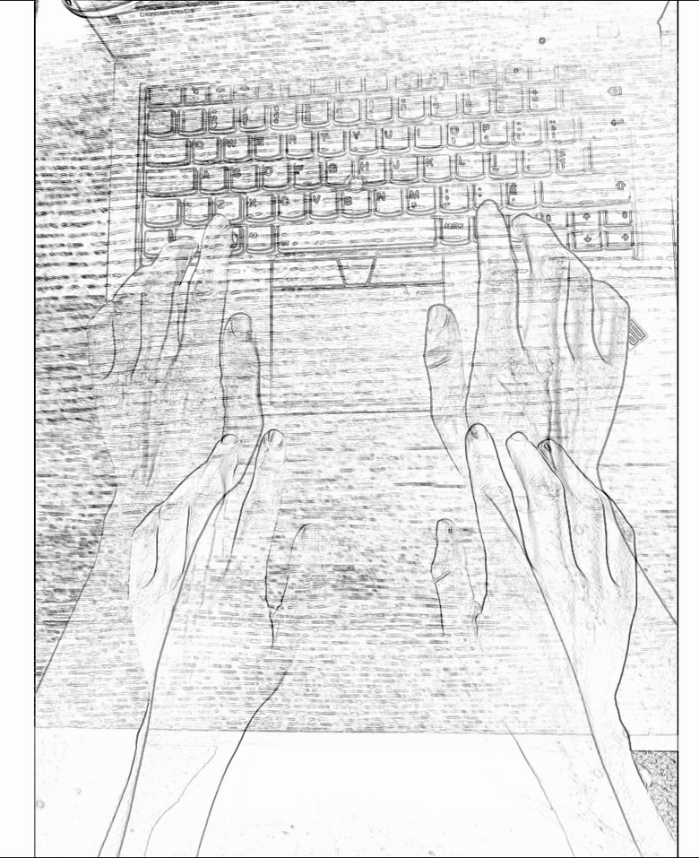
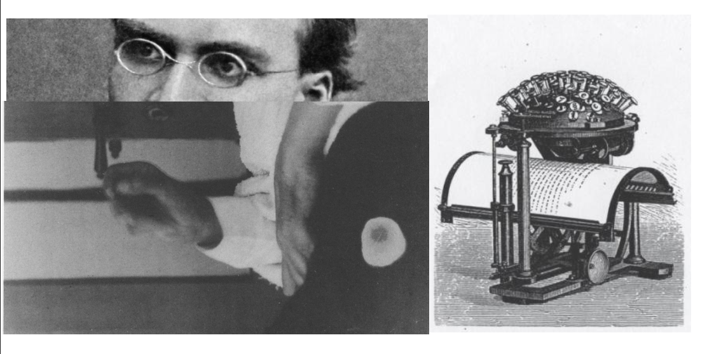

La Machine

Nos paumes sont posées sur la machine.
comme une mini imprimerie
dont je dispose les caractères par le regard
en appuyant simplement sur une surface chaude,
un peu graisseuse, qui résiste un peu,
pour me faire comprendre que la casse est prise,
et puis la machine fait le reste
Devenue l’outil commun d’écriture, d’édition, et de lecture dans le monde occidental, la machine est ici l’occasion de combiner différentes perspectives du texte qui conçoivent la création comme un processus d’articulation entre humain et non-humain : projections littéraires d’une évolution du geste et réalités techniques de l’inscription seront abordées de pair, s’articulant comme une mécanique de l’écriture autour de la question de la posture humaine vis-à-vis du texte produit par la machine.
qui de mon outil ou de moi ?
le texte est-il la rencontre de quelques engrenages
par mes doigts
plongés dans l'engin poli
Lieu de l’écrit (support/outil), cet espace de touches, de lumières et d’airs expulsés sera abordé au travers de la question de l’attribution du geste d’écriture (qui/quoi écrit ?) et de celle de l’émergence du texte (comment il advient, comment il se noue).
Texte. Rien de plus commun, rien de plus complexe. C’est à croire que l’enchevêtrement des fils – l’étymologie même du mot texte propose la métaphore du latin texere ou tisser – rend le concept de textes désormais inutilisable : « depuis trente ans ce mot a bien mérité de la critique et [on] devrait lui accorder sa retraite » (Vernet, Max. « Sic Transit Sic.» dans Calle-Gruber ( Citation: 1998, p. 205 Calle-Gruber, M. (1998). Butor et l’Amérique : colloque de Queen’s University. L'Harmattan. ) cité par Sinclair ( Citation: 2000, pp. 15-16 Sinclair, S. (2000). Une application d’HyperPo, un logiciel d’analyse de texte informatisée à La Disparition de Georges Perec . Queen's University, Kingston, Ontario. ) )
Le point soulevé par Sinclair et formulé au tout début d’une réflexion consacrée à une extension technique du texte (à savoir l’hypertexte) décrit parfaitement le contraste animant une notion à présent inévitable des études littéraires et qui pourtant demeure absolument et substantiellement impalpable au regard d’une tradition des études littéraires. Plutôt que de déployer stratégies et ruses du discours pour éviter la confrontation avec une entité cousue et patchée de contradictions, ce qui aura été fait pour d’autres notions, l’écriture souhaite ici l’adresser frontalement. Si le texte n’est aujourd’hui rien de plus commun, complexe ou certain, c’est que son enchevêtrement de fils théoriques l’a décousu de son propre corps, le gardant certes en lien avec une paternité auctoriale, mais le séparant de l’espace de production. Par la machine, la mécanique de l’écriture souhaite l’y ramener.
rien en dehors des incarnations
rien en dehors des fils des moires
Les travaux de Shillingsburg ( Citation: 1996 Shillingsburg, P. (1996). Scholarly Editing in the Computer Age: Theory and Practice (3rd ed). University of Michigan Press. ) autour du texte en tant qu’objet d’édition, rappelés par Hayles dans My Mother was a Computer ( Citation: 2005 Hayles, N. (2005). My Mother was a Computer: Digital Subjects and Literary Texts. University of Chicago Press. ) , illustrent cette perspective du texte comme une entité non seulement isolée des caractéristiques physiques mais également des qualités éditoriales (liées à la mise en page autant qu’aux effets de lecture). Dans ce décrochage de la théorie, le texte serait comme « an inert, nonreactive substance that can be poured from container without affecting its essential nature » ( Citation: 2005, p. 94 Hayles, N. (2005). My Mother was a Computer: Digital Subjects and Literary Texts. University of Chicago Press. ) / « une substance inerte et sans réaction qui peut être transvasée d’un récipient sans en altérer la nature essentielle » et notre déprise de l’écriture est actée à nouveau. Ce ne sont pas les nouveaux médias qui ont coupé le cordon déjà effilé des littératures. La culture numérique hérite de cette coupure par une tradition des sciences humaines et la poursuit sur bien des niveaux. La quête de l’écriture ici ne se limite pas simplement à renverser un ordre impérieux du discours, à savoir le régime de l’abstraction, mais vise également à l’intégrer comme une maille participant à un enchevêtrement. Ni retraite ni révolution ni repos, la perspective de la machine s’attache davantage à découdre un entrelacement de représentations, imaginaires et procédures.
découdre, détisser,
remettre à l'ouvrage au matin,
redéfaire le soir,
tout le manège se noue dans l'attente d'une présence
comme si l'inscription des fils d'une narration pouvait la faire apparaître
Pour composer/confronter/correspondre avec une idée et une réalité de l’écriture, le défilement des mots s’interroge ici sur la façon dont se nouent les engrenages littéraires, en prenant en compte non plus les outils de la langue et du style, mais les réalités d’un dispositif qui agence, articule, produit et ruse.
La mécanique de l’écriture #
quand j'écris, sous mes doigts,
le bruit est entre le grincement et la frappe,
entre mes soupirs
et ceux de la ventilation de la bombe
Dans l’apocalypse de l’écriture énoncée par Kittler sont visées plusieurs réalités de l’écrit : si l’écriture ne se fait plus humaine, c’est autant vis-à-vis d’une pratique d’inscription qu’au regard d’un type de signe produit. Le signe devient signal ou différentiel électrique tandis que l’écriture devient mécanique, si elle ne l’a pas en réalité toujours été, avec une partie intouchable et aveugle de la boîte noire ( Citation: 2015 Kittler, F. (2015). Mode protégé. les Presses du réel Labex Arts-H2H. ) . Le fonctionnement de l’écriture échappe, tout ce qui fait son épaisse réalité glisse entre les doigts de l’entendement et de la sensation : l’écriture se fait, pour Kittler, désormais au-delà du contrôle et de vision de l’humain, dans l’espace du non-humain, là où elle a toujours été :
L’écriture est toujours inhumaine. ( Citation: Vitali-Rosati, 2020 Vitali-Rosati, M. (2020). Qu’est-ce que l’écriture numérique ?. Corela. Cognition, représentation, langage(HS-33). https://doi.org/10.4000/corela.11759 )
Les incarnations de l’écriture prennent aujourd’hui corps dans un espace où la distinction entre numérique et non-numérique, entre humain et non-humain est proche plus clairement de l’artificiel, soit d’une construction rhétorique qui peut autant promettre la dictature des robots qu’elle peut nier leurs impacts sur nos pratiques de pensée, et peut-être également artificiellement débattue puisque la littérature contemporaine se définit principalement par des principes d’hybridations (entre types, publics, médias) ( Citation: Ruffel, 2010 Ruffel, D. (2010). Une littérature contextuelle. Litterature, 160(4). 61–73. Retrieved from https://www.cairn.info/revue-litterature-2010-4-page-61.htm ) . Le récit d’une immatérialité se poursuit au travers des âges littéraires entre l’abstraction du texte et la dématérialisation de l’écriture au sein des environnements numériques. Dans la diversité des machines d’écriture, servant au geste d’inscription (comme les premières machines à écrire) ou produisant cette écriture par strates programmables (comme les générateurs littéraires), la question de l’engendrement du texte se pose.
comment nais-tu ?
au travers des brouillons éparpillés
au travers des dialogues éditoriaux
comment adviens-tu ?
de quelle matrice
de quel parent
Herméneutique ou enquête pour révéler les fantômes et machinations, la démarche d’écriture vise ici à comprendre cette problématique maternité qui ne se défait aujourd’hui pas de la machine tout en participant d’un récit pour en exprimer les imaginaires et discours en réseaux : à la différence d’une analyse auctoriale (portant sur les intentions de l’auteur en amont du texte), il s’agit d’« expliciter le mouvement par lequel un texte déploie un monde en quelque sorte en aval de lui-même » (en référence à la refiguration de Ricœur ( Citation: 1983, p. 122 Ricœur, P. (1983). Temps et récit. 1. Éditions du Seuil. ) ).
La matrice du texte #
ceci est une approche littéraire de la machine
Propre association de l’écriture ici-même, la porosité entre machine et matrice agit comme un spectre qu’il vaut d’autant mieux interpeller avec transparence. En tant que dispositif technique d’engendrement d’inscriptions, la machine pose la question des multiples statuts du texte et de sa présence dans l’outil, qui sert autant au geste qu’il fait office de support d’enregistrement. Un extrait, issu des nombreuses créations qui se nouent autour du mystère de l’origine, tiré de la pièce de théâtre Incendies de Mouawad permet d’illustrer la question en plus de produire un fil liant machine, matrice et texte.
Un plus un ça peut-il faire un ? ( Citation: 2015, p. 120 Mouawad, W. (2015). Incendies. Leméac. )
Enquête généalogique, le récit Incendies suit les romans individuels successifs de deux jumeaux (une sœur et un frère) qui partent à la recherche de leur père et de leur frère disparus pour honorer la demande posthume de leur mère. L’odyssée des enfants se clôt sur cette révélation œdipienne : leur père et leur frère sont un seul et même homme. Le texte retrace une quête qui est en réalité celle de l’impossible origine parce qu’humainement inconcevable au regard des interdits de la consanguinité même si mathématiquement juste. Le paradoxe d’une réalité se joue entre des principes de relation humaine et des structures mathématiques. Le moment épiphanique du dénouement se fait par le détournement d’un exercice mathématique, et ce stratagème fait d’une situation impossible à saisir par l’entendement (ne pouvant se résoudre à l’idée d’une identité fondée sur l’inceste) une suite calculable et computable. En somme la solution fonctionne aux yeux de la logique mais n’est pas entendable aux oreilles de la raison. L’énigme de l’origine est exposée par la reprise de la conjecture, au demeurant indémontrée, de Syracuse (ou problème 3x +1) selon laquelle la suite de Syracuse1 de n’importe quel entier strictement positif atteint le chiffre 12. Au gré de cet impératif mathématique, les statuts familiaux que sont celui du père et du frère peuvent donc référer au même individu, c’est-à-dire dans l’analogie littéraire, à une même suite qui se répète indéfiniment. La question existentielle que pose la création de Mouawad s’érige par la quête, structure filée au sein de plusieurs de ses écrits où il s’agit de retrouver ce qui a été perdu, en somme l’être au sens de construction généalogique et tissage de sang où les liens s’avèrent en réalité entrelacés (Sœurs, Mère, les composants de la tétralogie Le Sang des Promesses entre autres). Si le principe de l’introspection implique dans ses narrations des êtres de mots pour porter un discours sur une humanité, le renversement de cette architecture humaniste a de fait déjà été effectué : les théories sur la génétique du texte n’ont pas d’autre quête que celle de comprendre les liens entre les perceptions du monde, soit d’essayer de concevoir un système logique pour un évènement qui semble échapper à la raison. Le texte est-il un ou multiple ? Demeure-t-il unique malgré ses reproductions ou est-il la somme de ses exemplaires ou entités ( Citation: Genette, 1994 Genette, G. (1994). L’œuvre de l’art. Éditions du Seuil. ) ? Le texte est-il l’incarnation d’une idée dans une matière (soit 1 dans 1 pour faire 2), ou est-ce le même corps (ne pouvant donner d’autre somme que 1) ? Le texte est-il enfin le produit d’une machine et de moi en arrière de la machine dans un principe de co-auctorialité ?
qui écrit entre mes doigts ?
qui tape sous mes lignes ?
Esprit de systèmes, Genette, reprenant la distinction de Goodman entre les arts autographiques et allographiques ( Citation: 1976 Goodman, N. (1976). Languages of Art: An Approach to a Theory of Symbols. Hackett Publishing. ) , définit la littérature comme un art allographique dans la mesure où son objet principal (ce qu’il désigne comme le texte) est de nature idéale et ne peut se concevoir que par réduction de ses manifestations matérielles. Si l’essence du littéraire (sous la forme de l’œuvre) relève selon Genette d’une immanence idéale – elle peut être reproduite en un nombre illimité d’exemplaires tous valables ( Citation: Wolterstorff, 1980 Wolterstorff, N. (1980). Works and Worlds of Art. Oxford University Press. ) –, le critique distingue plusieurs modes d’existence de type transcendant ( Citation: Genette, 1994, pp. 300-325 Genette, G. (1994). L’œuvre de l’art. Éditions du Seuil. ) :
- la transcendance par pluralité d’immanence : une œuvre existe en plusieurs objets non identiques et interchangeables (des textes), mais avec une unité opérale.
- la pluralité opérale : l’objet d’immanence (le texte) recouvre des significations différentes selon le contexte, il peut ainsi supporter plusieurs œuvres.
- la transcendance par partialité : une œuvre se présente de manière lacunaire ou fragmentaire.
Dans ce système ontologique texto-centré et qui, hérité d’une idéalité esthétique de l’œuvre littéraire ( Citation: Ingarden, 1983 Ingarden, R. (1983). L’œuvre d’art littéraire. L'âge d'homme. Retrieved from https://www.lagedhomme.com/ouvrages/roman+ingarden/l%27%C5%93uvre+d%27art+litteraire/210 ) , laisse l’œuvre littéraire dans un flou d’existence, plusieurs créations et phénomènes du fait littéraire accrochent, ne trouvent pas raison et ne coïncident pas avec la logique genettienne. Qu’en est-il des variantes ? Qu’en est-il des littératures qui existent par la vidéo ou par d’autres médias ? Qu’en est-il des littératures hébergées sur nos machines, mais publiées en ligne ? La notion d’œuvre, qui aurait pu aider à la généalogie du texte, est rendue obsolète ( Citation: Bon, 2003 Bon, F. (2003). Pas besoin de la notion d’oeuvre. ) .
quel est le système de mon site ?
de quel type relève mon blog ?
quelle littérature ?
Ce que l’on peut tout de même retenir des systèmes genettiens, qui paradoxalement contreviennent par leur présence même à une idéalité absolue du littéraire, est qu’il existe une épaisseur du fait littéraire qui pourrait se saisir par des principes de diversité, de ramification et de relation. Cette épaisseur, il n’est pas étonnant que Genette la traduise par un mot et surtout une image qui va alors coller à la peau de sa théorie, bien qu’elle n’ait été qu’une belle image : le palimpseste.
Tegernsee du XIème siècle vous conseille :
lixivier le parchemin avec du lait
saupoudrer de farine
sécher
polir à la pierre ponce et à la craie
Le palimpseste, entendu comme une sur-inscripiton, est l’image commune pour parler de strates du réel dont celles du texte. Historiquement assimilé à un parchemin manuscrit, le palimpseste est un texte-support réinscrit par des copistes (principalement entre le VIIe et le XIIe siècle) pour des raisons de coût. L’effacement ou le désencrage de la première inscription se faisait au Moyen-âge à l’aide d’un stylet ou d’une pierre ponce3. Au-dessus de cette première inscription historique, grattant quelque peu le contexte d’émergence, notre étude cherche à réinscrire le palimpseste comme méthodologie d’écriture transmédiale et transhistorique, soit dans le cadre d’une théorie générale de la littérature sur les matériaux de son écriture. Écriture faite écriture et lecture faite écriture, le palimpseste rejoint en l’état la catégorie des dispositifs selon la définition générale de Foucault ( Citation: Agamben, 2006 Agamben, G. (2006). Théorie des dispositifs. Poésie, N° 115(1). 25–33. Retrieved from https://www.cairn.info/revue-poesie-2006-1-page-25.htm ) : une conjoncture de réels établie par un rapport de force motivée par des enjeux de pouvoir et de savoir. Dans le processus palimpsestique, plusieurs corps sont impliqués – le support, la matière de la première inscription, le stylet, la matière de la deuxième inscription – et travaillés dans un jeu de limites – le stylet est retourné/détourné, le support est gratté sans être perforé, la première inscription est effacée en demeurant discernable – et ce, en vue d’imposer un nouveau récit qui ne peut cependant pas se départir de son contexte ou environnement d’écriture.
ou utiliser de la chaux vive, du vitriol et de l'alun
ou du fromage, du lait, de la chaux vive et du jus d'ortie
ou de la chaux, de la farine, de l'eau et des coquilles d'œufs
ou du lie de vin, des cendres de vigne et de l'eau
C’est en tant que « réseaux qui existe entre [l]es éléments » (entretien de Foucault de 1977 cité par Agamben
(
Citation: 2006, p. 27
Agamben,
G.
(2006).
Théorie des dispositifs.
Poésie, N° 115(1). 25–33. Retrieved from
https://www.cairn.info/revue-poesie-2006-1-page-25.htm
)
) que le pasimpleste palimpseste lie les composants support et écriture aux questionnements de l’origine. Dans une même origine et logique empirique, les sur-inscriptions érigent le support d’écriture au rang de matrice : comparable à la parthénogénèse, le premier texte enfante le second en tant qu’il détermine sa venue comme il a été déterminé par la matière de son support. À l’image de la boucle infinie de Syracuse, l’écriture (dans un système d’inter-relations proche de l’entrelacement textuel de Genette) est toujours une écriture issue d’autres écritures, soit autant des caractéristiques langagières (de l’ordre du discours) que des caractéristiques physiques. Le palimpseste instaure une procédure qui se fonde sur une connaissance physique et technique de ce qu’implique le geste d’inscription, prenant en compte une épaisseur plastique de l’écriture et donc une multiplicité du texte. Sous-écriture ici même, le palimpseste représentait aussi l’un des premiers grands arcanes du projet d’écriture : avant d’être consacrée officiellement à l’épaisseur de l’écriture, la thèse ambitionnait la resémantisation du palimpseste avec la prise en compte des caractéristiques de l’écriture numérique. La mise à l’épreuve, l’approfondissement, le grattage de la surface de ce qui semblait être un horizon d’étude en a révélé la nature : le palimpseste était une belle image qui, si elle tient sous certains angles la comparaison, ne peut être que métaphorique quand il s’agit d’une théorie de l’écriture et des principes d’écriture-machine.
hors de l'imaginaire de la matrice
pensée de l'organique
réalité corporelle
La fracture de l’organique #
de l'organe à l'outil
même racine
sortie du corps
naissance
Depuis ses nombreuses métamorphoses, la mécanique de la machine est étroitement liée à l’organique, comme extension appareillée d’un corps ou d’un membre spécifique. Désignant à l’origine un instrument particulier (utilisé pour soulever des poids, comme un levier actionné par une main humaine), la machine développe son accointance charnelle avec les définitions suivantes, se généralisant à plusieurs types d’intervention sur la matière.
Ex his sunt alia quae μηχανικῶς, alia quae ὀργανικῶς moventur. Inter machinas et organa id videtur esse discrimen, quod machinae pluribus operibus aut vi majore coguntur effectus habere, uti balistae torculariorumque preda. Organa autem unius opera prudenti tactu perficiunt qiod propositum est, uti scorpionis seu anisocyclorum versationes. Ergo et organa et machinarum ratio ad usum sunt necessaria, sine quibus nulla res potest esse non impedita. ( Citation: Vitruve, 1986, p. 3 Vitruve, M. (1986). De l’Architecture. Livre X (Les Belles Lettres). Gallimard. Retrieved from https://www.lesbelleslettres.com/livre/9782251013091/de-l-architecture-livre-x )
De toutes ces machines, les unes se meuvent μηχανικῶ, les autres ὀργανικῶς. Entre les machines et les organes, il me semble y avoir cette différence que les machines exigent pour être effective, davantage de bras, de forces, comme les balistes et les arbres des pressoirs, et que les organes, maniés avec adresse par un seul individu, exécutent ce à quoi ils sont destinés, comme les arbalètes et les anisocycles. Toutes ces machines, de quelque espèce qu’elles soient, sont d’un usage indispensable puisque sans elles il n’est rien qui se fasse sans difficulté. (traduction personnelle)
Si les deux catégories énumérées par Vitruve se rejoignent dans un principe de maniement, se distinguant entre adresse et force, elles dérivent chacune pour creuser encore une différence (le sens des organa vitruviens correspondant aujourd’hui davantage au sens moderne d’outils) entre des machines simples (organa) et des machines composées. Décrivant alors la structure complexe d’un corps physique en tant que machine corporelle, « ensemble d’éléments ayant la complexité d’une machine » ( Citation: Oresme, 1968, pp. 520-55 Oresme, N. (1968). Le Livre du ciel et du monde. The University of Wisconsin Press. Retrieved from https://www.mullenbooks.com/pages/books/147210/nicole-oresme-albert-d-menut-alexander-j-denomy/le-livre-du-ciel-et-du-monde ) ou « combinaison d’organes (du corps d’un être animé) » ( Citation: Descartes, 2010, p. 628 Descartes, R. (2010). Œuvres philosophiques (Éd. corrigée). Éditions Classiques Garnier. ) , la machine est autant un outil méthodologique pour comprendre une architecture de l’extérieur qu’un principe pour saisir dans la main de l’entendement et agir sur une mécanique interne. L’esquisse initiale de la machine sur laquelle l’on peut s’accorder dans un premier temps est celle de produire une modélisation d’un corps et notamment de son pouvoir d’action sur le monde.
corps du texte articulé
105 récepteurs de toucher
un poumon latéral
une mémoire, un cœur peut-être
Les développements par la suite redéfiniront les contours de la machine en la distinguant plus radicalement de l’outil et, par extension, du maniement : désormais la machine « s’appuie sur une source de pouvoir en dehors du corps et […] n’est pas opérée manuellement » ( ( Citation: Ingold, 2010, p. 298 Ingold, T. (2010). L’Outil, l’esprit et la machine : Une excursion dans la philosophie de la “technologie”. Techniques & Culture. Revue semestrielle d’anthropologie des techniques(54-55). 291–311. https://doi.org/10.4000/tc.5004 ) à partir de ( Citation: Mitcham, 1978, pp. 235-36 Mitcham, C. (1978). Types of Technology. Research in Philosophy & Technology, 1. 229–294. ) . La machine dans son évolution générale s’extrait donc en quelque sorte de son corps d’origine : passant d’une architecture interne et organique, à une extension physique jusqu’à puiser un pouvoir d’intervention hors de l’humain. La machine s’est séparée alors de la matrice dans son histoire. Cette indépendance, qui est certainement la source de nombreux discours et imaginaires apocalyptiques et technophobes, est ce que retiennent notamment les définitions modernes :
Ainsi, la notion de l’outil a fini par être réservée à cet aspect d’un dispositif qui est mis en œuvre par l’action humaine, tandis que la « machine », selon les mots de Mitcham « désigne habituellement un instrument dans son indépendance vis-à-vis de l’homme, ou au moins l’aspect du dispositif qui ne dépend pas de l’homme » ( Citation: Mitcham, 1978, p. 236 Mitcham, C. (1978). Types of Technology. Research in Philosophy & Technology, 1. 229–294. ) . (traduction d’Arundhati Virmani ( Citation: Ingold, 2010, p. 298 Ingold, T. (2010). L’Outil, l’esprit et la machine : Une excursion dans la philosophie de la “technologie”. Techniques & Culture. Revue semestrielle d’anthropologie des techniques(54-55). 291–311. https://doi.org/10.4000/tc.5004 ) )
Si certains dispositifs dans leurs hybridités résistent aux catégories qui demeurent somme toute théoriques, on pourra s’accorder, pour le cas de l’étude, que la machine est un modèle dans lequel l’humain n’est plus au centre du maniement sans être totalement mis à l’écart.
force d'actionnement et non d'action
main dans la manivelle
second moteur de motion
Le « degré d’indépendance »4 qui distingue l’outil de la machine place la machine au cœur de la question du déterminisme technique de l’écriture. Identifiée comme « le problème du déterminisme technologique » ( Citation: Heilbroner, 1967 Heilbroner, R. (1967). Do Machines Make History?. Technology and Culture, 8(3). 335. https://doi.org/10.2307/3101719 ) , la machine et la technologie partagent les mêmes schémas d’évolution, soit un mouvement progressif de rupture organique. Parce que les machines qui seront saisies dans la suite de l’écriture sont essentiellement et logiquement appréhendées comme machine d’écriture (composées par et destinées à l’écriture), cette rupture est également celle d’une écriture se trouvant alors modifiée à l’interne, abstraite d’une réalité de production.
roule et tourne
roule et répète
renvoie le chariot comme un bœuf
dans une autre ligne du paysage
Produite également à partir d’une époque moderne, la technique a aujourd’hui peu d’analogies avec son passé classique aristotélicien (tekhnê signifiait « la capacité générale à fabriquer des choses avec intelligence » ( Citation: Bruzina, 1982, p. 167 Bruzina, R. (1982). Art and Architecture, Ancient and Modern. Research in Philosophy & Technology, 5. 163–187. ) ). Influencée par un rapport mécaniste de la nature, la technique passe de l’« aptitude qui dépend de la capacité de l’artisan à envisager des formes particulières et à appliquer ses compétences manuelles et son acuité visuelle pour les exécuter » ( Citation: Ingold, 2010, p. 292 Ingold, T. (2010). L’Outil, l’esprit et la machine : Une excursion dans la philosophie de la “technologie”. Techniques & Culture. Revue semestrielle d’anthropologie des techniques(54-55). 291–311. https://doi.org/10.4000/tc.5004 ) à une perspective du « purement technique ».
Là où l’artisan adaptait son matériel brut à une certaine conception de forme, tout en restant en grande partie ignorant des processus de travail, son homologue contemporain – que nous pouvons pour le moment désigner par « technicien » – applique des règles claires de procédure dont la validité est insensible aux formes particulières qu’il désire créer. Ces règles, enracinées dans les principes généraux des sciences naturelles, fournissent le logos de la tekhnê, la rationalisation du processus de production qui manquait dans l’art de l’artisan ( Citation: Mitcham, 1979, p. 182 Mitcham, C. (1979). Philosophy and the History of Technology. The History and Philosophy of Technology. 163–201. ) . ( Citation: Ingold, 2010, p. 292 Ingold, T. (2010). L’Outil, l’esprit et la machine : Une excursion dans la philosophie de la “technologie”. Techniques & Culture. Revue semestrielle d’anthropologie des techniques(54-55). 291–311. https://doi.org/10.4000/tc.5004 )
Rejoignant la mécanique (bien que les deux principes étaient distingués selon une conception classique), la technique moderne est « une instrumentalité d’un certain genre, notamment, celle qui peut être séparée du contexte spécifique de l’expérience et de la sensibilité humaine en tant qu’impliquée dans la fabrication » ( Citation: Bruzina, 1982, p. 167 Bruzina, R. (1982). Art and Architecture, Ancient and Modern. Research in Philosophy & Technology, 5. 163–187. ) . Cette séparation de l’humain dans son rapport au monde rejoint le regard de Kittler sur la transition médiatique ayant cours entre 1800 et 1900 : désormais, les dispositifs d’enregistrement saisissent de leurs doigts roses des données qui font défaut à la perception humaine, qui échappent à ses sens ( Citation: 1993 Kittler, F. (1993). Draculas Vermächtnis: technische Schriften (1. Aufl). Reclam. ) .
Du rythme, du rythme, plus vite, plus vite.
L’être humain insuffle son énergie dans la machine. La machine n’est rien d’autre que lui-même, son extrême puissance son extrême concentration et sa tension finale. Et lui-même se fait machine, se fait levier, se fait touche, se fait caractère et chariot mobile.
Ne pas penser, ne pas réfléchir, encore, encore, vite, vite, taper, taper, tiptiptiptiptiptip … (traduction ( Citation: Brück, 1950 Brück, A. (1950). Mademoiselle Brückner, dactylo. Busson. ) à partir de ( Citation: Brück, 1930, p. 229 Brück, A. (1930). Schicksale hinter Schreibmaschinen. Sieben-Stäbe-Verlag. ) )
Nouveau démembrement d’une organique de la mécanique, l’avènement d’une instrumentalité d’un certain genre cause également un autre divorce : la mécanique moderne de la machine distingue le moment du design, du dessin, du projet ou de la modélisation de l’étape de production, d’implémentation et d’écriture. Cette déliaison creuse en partie l’écart entre technicien et ingénieur ( Citation: Mitcham, 1978, p. 230 Mitcham, C. (1978). Types of Technology. Research in Philosophy & Technology, 1. 229–294. ) .
La machine, placée du côté de la construction, restreint encore dans les nouveaux contours de sa mécanique le lien et l’implication du sujet humain dans l’acte de fabrication ( Citation: Ingold, 2010 Ingold, T. (2010). L’Outil, l’esprit et la machine : Une excursion dans la philosophie de la “technologie”. Techniques & Culture. Revue semestrielle d’anthropologie des techniques(54-55). 291–311. https://doi.org/10.4000/tc.5004 ) . La progressive disparition de la main humaine dans la production émane de cette perspective du faire et vient en quelque sorte rompre le mythe de l’homo faber, l’homme par le savoir-faire, au cœur de son idéalité. L’angoisse techno-déterministe peut par cette perspective du faire être renversée : ce ne sont pas les machines qui manquent d’humanité, mais bien les humains5. Soit, pour reformuler, la machine, qui désignait une physiologie organique puis un potentiel d’intervention manuel, après de multiples fractures, devient désormais un lieu (si ce n’est Le lieu) pour observer comment est manœuvrée une humanité du faire-écriture.
La frappe aveugle #
Wer das Aufschreiben besorgt, vermag ich nicht mit Sicherheit zu sagen. (Exclamation du président Schreber retranscrite par Freud [1903] cité par Kittler ( Citation: 1985 Kittler, F. (1985). Aufschreibesysteme 1800/1900 (3., vollst. überarb. Neuaufl). Fink. ) )
Je ne saurais dire avec certitude qui assure la transcription. (traduction personnelle)
La déprise et les discours qui l’ont pressentie ne sont pas sans évoquer une paranoïa proche du cas du président Schreber qui, loin de se référer spécifiquement à la machine d’écriture, souligne un trouble dans l’intentionnalité d’écriture.
trouble dans la machine
je n'est plus au centre de son écriture
désaxé du geste d'inscription
Si la machine moderne évacue la main humaine dans la production, ou la place à un niveau intermédiaire, ce n’est pas seulement une déprise dans la pensée technique qui se trame, pour Heidegger, c’est bien plus dans l’essence de l’humain que se fait la rupture.
L’homme lui-même « agit » et « manœuvre » grâce à la main ; car la main forme avec la parole le trait essentiel de l’homme. […] Grâce à la main ont lieu non seulement la prière et le meurtre, le salut et le remerciement, le serment et le signe, mais aussi l’« œuvre » de la main, le « métier », et l’instrument. La poignée de main scelle un pacte. La main déclenche une « œuvre » de destruction. La main ne se déploie en tant que main que là où il y a décèlement et cèlement. Aucun animal n’a de main, et d’une patte, d’une serre ou d’une griffe jamais ne naît une main. […] Ce n’est qu’à partir de la parole et avec la parole que surgit la main. Ce n’est pas l’homme qui « a » des mains, mais la main qui porte l’essence de l’homme, car la parole comme domaine d’essence de la main est le fondement de l’essence de l’homme. (Heidegger ( Citation: 2011, p. 132 Heidegger, M. (2011). Parménide: cours de Fribourg du semestre d’hiver 1942 - 1943. Gallimard. ) cité par Kittler ( Citation: 2018, p. 333 Kittler, F. (2018). Gramophone, film, typewriter. les Presses du réel. ) )
Cœur du nouveau roman de l’humanité – proche du mythe de l’homo faber de Flusser, mais plus établi dans une individualité – la main de Heidegger a fonction de ligne entre les époques et les actions humaines, entre ses marqueurs de société, dans ses rapports de communauté. Dans cette perspective où la main est le premier moyen d’intervention et les doigts qui la composent semblent détenir toute la « dignité »/Würde ( Citation: Flusser, 1997 Flusser, V. (1997). Vom Stand der Dinge: eine kleine Philosophie des Designs. Steidl Verl. ) de l’humain, il manque cruellement le principe de saisissement, car c’est en réalité tout le sens du manuel que redéfinit une industrialisation qui fait se tisser des liens entre les machines et les cultures :
L’industrialisation atteignit à la fois l’écriture manuscrite et le travail manuel. […] Ce n’est pas une coïncidence si les premiers modèles concurrents [à la machine à écrire fabricable en série Sholes par Remington & Son en 1874] provinrent de la Compagnie de machines à coudre domestiques, de la fabrique Meteor, usine saxonne de fabrication de machines à coudre ou encore de Seidel & Naumann [qui était jusqu’en 1944 la plus grosse entreprise de machines à coudre et à écrire] ( Citation: Stümpel, 1985, p. 9 Stümpel, R. (1985). Vom Sekretär zur Sekretärin. Eine eine Ausstellung zur Geschichte der Schreibmaschine und ihrer Bedeutung für den Beruf der Frau im Büro (). Schmidt & Bödige. ) . ( Citation: Kittler, 2018, p. 311 Kittler, F. (2018). Gramophone, film, typewriter. les Presses du réel. )
La main de Heidegger est sur ce point à comprendre comme le symbole d’un principe d’action, un premier outil rattaché au corps de l’humain lui permettant de créer toutes les autres extensions qui dépassent mais qui peuvent également contredire un statut d’être au monde.
Si la perspective de Heidegger reprise par Kittler est certes logocentrée et anthropocentrée, elle a le mérite de penser l’introduction de la machine dans le processus de l’écriture par le spectre des rapports entre humain et non-humain, en les opposant comme un combat ontologique.
La machine à écrire arrache l’écriture au domaine d’essence de la main, c’est-à-dire de la parole. Le mot lui-même devient quelque chose de « tapé ». Là où l’écriture à la machine, en revanche, n’est qu’une transcription et sert à la conservation de l’écrit, ou substitue à ce qui a été écrit un texte « imprimé », elle a sa signification propre, mais limitée. (Heidegger ( Citation: 2011, p. 133 Heidegger, M. (2011). Parménide: cours de Fribourg du semestre d’hiver 1942 - 1943. Gallimard. ) cité par Kittler ( Citation: 2018, p. 333 Kittler, F. (2018). Gramophone, film, typewriter. les Presses du réel. ) )
« [C]roissante dévastation du mot », la machine à écrire est reprise dans sa qualité d’intervention radicale sur le monde en déplaçant l’essence de l’humain et donc sa position vis-à-vis de ce dernier et de lui-même. Intermédiaire « à mi-chemin de l’outil et de la machine » ( Citation: Heidegger, 2011, p. 141 Heidegger, M. (2011). Parménide: cours de Fribourg du semestre d’hiver 1942 - 1943. Gallimard. ) , la machine à écrire dans l’histoire du faire de l’humain est un élément de transition qui, de manière identique dans sa lecture de l’histoire culturelle, constitue une entité de la trinité technologique Gramophone, Film, Typewriter de Kittler ( Citation: 1999 Kittler, F. (1999). Gramophone, Film, Typewriter. Stanford University Press. ) . Dans la lignée des pensées des médias, les théories sont influencées par un contexte historique et un imaginaire de l’armement. La machine à écrire arme concrètement le discours de l’humain en ce que la nouvelle gestuelle scripturaire évoque pour les deux chercheurs un mouvement plutôt offensif (chez Heidegger) ou ouvertement combatif (chez Kittler).
La machine à écrire devient une mitrailleuse à discours. La machine, qui se base sur ce que l’on appelle non sans raison des « frappes », fonctionnait par étapes automatisées et discrètes, comme le mécanisme de chargement en munitions du revolver ou de la mitrailleuse […]. ( Citation: Kittler, 2018, p. 317 Kittler, F. (2018). Gramophone, film, typewriter. les Presses du réel. )
La métaphore militaire apposée à la machine évoque certainement pour Kittler l’héritage des travaux de Turing mais également une culture littéraire notamment la création entre écriture et réalisation chez Cocteau. Figure à la fin du passage entre deux paradigmes culturels, Cocteau a conçu des créations à l’image des développements techniques de la fin du XIXe siècle : le téléphone est l’acteur principal de La Voix humaine ; Orphée dont il a signé le scénario retrace toute l’émergence d’une époque où les miroirs, les doubles, les cryptages et la multiplication des ondes troublent l’esprit des humains ( Citation: Cocteau, 2003, p. 203 Cocteau, J. (2003). Du cinématographe (Nouvelle [3.] éd. revue et augmentée). Ed. du Rocher. ) . La machine à écrire figure dans le bestiaire technologique de Cocteau puisqu’elle incarne le nœud narratif de la pièce du même titre. Inspirée de l’affaire réelle dite de Tulle6, la pièce décrit l’état d’une ville placée sous la terreur de lettres anonymes dactylographiées et signées « la machine à écrire » et la poursuite par le personnage principal de cette entité qu’il « imagine […] qui table, qui tire qui manie sa mitrailleuse » ( Citation: Kittler, 2018, p. 319 Kittler, F. (2018). Gramophone, film, typewriter. les Presses du réel. ) .
le mot tue
la machine frappe
le visé succombe
La « tape » et la « frappe » sont désormais le nouveau lexique de l’écriture qui par la machine se divise en deux régimes :
Au début du règne de la machine à écrire, une lettre écrite à la machine passait encore pour une lettre de bienséance. Aujourd’hui une lettre écrite à la main est une chose vieillie et non désirable, qui gêne la lecture hâtive. L’écriture machinale prive la main de son rang dans le domaine de la parole écrite et dégrade la parole en moyen de communication. Elle présente en outre l’avantage de celer l’écriture manuscrite, et par là même le caractère. Grâce à l’écriture à la machine tous les hommes se ressemblent. (Heidegger ( Citation: 2011, p. 140 Heidegger, M. (2011). Parménide: cours de Fribourg du semestre d’hiver 1942 - 1943. Gallimard. ) cité par Kittler ( Citation: 2018, p. 333 Kittler, F. (2018). Gramophone, film, typewriter. les Presses du réel. ) )
La déprise de l’écriture, la désécriture de Kittler évoque également à la défection de la main dans le geste d’écriture (ce que l’on peut nommer désintermédiation), et il n’est pas étonnant qu’il se réfère dans son étude de la machine à écrire à la pensée de Heidegger qui, ironiquement, traduit ou parle en passant par le régime de l’écriture manuscrite. Or, si la main demeure concrètement dans la transaction, c’est davantage son ordre et la lisibilité de l’action qui sont revus dans un balancement entre décèlement et scellement.
La machine à écrire est un nuage que rien n’annonce, c’est-à-dire un cèlement qui, malgré sa présence insistante, se retire et à travers lequel le rapport de l’être à l’homme subit une mutation. Rien en effet ne la laisse voir, elle ne se montre pas en son essence […]. (Heidegger ( Citation: 2011, p. 141 Heidegger, M. (2011). Parménide: cours de Fribourg du semestre d’hiver 1942 - 1943. Gallimard. ) cité par Kittler ( Citation: 2018, p. 333 Kittler, F. (2018). Gramophone, film, typewriter. les Presses du réel. ) )
McLuhan pose ce flou de la ligne directrice du faire-écriture comme une fusion entre « la composition et la publication » ( Citation: McLuhan, 1977, p. 299 McLuhan, M. (1977). Pour comprendre les média : les prolongements technologiques de l’homme. Éditions du Seuil. ) et donc impose une attitude entièrement nouvelle si on la considère dans le paradigme de l’auteur : pour l’éditeur, composition et publication avaient déjà fusionné dans l’établissement de la page d’imprimerie.
on place, on contrôle,
on actionne, ça baisse, ça presse,
on lève, on contrôle,
on replace, ça repasse
Au-delà du principe de fabrication d’une écriture, où la machine à écrire renvoie à une industrialisation personnelle de l’écriture, les premières machines à écrire comme le remarque Gitelman laissaient une latence dans le dévoilement du texte tapé : les lignes du texte sont alors montrées les unes après les autres au fur à mesure de la frappe.
The machine’s upstrike design seemed to refute the possibility of error, however unrealistically, and in removing the act of inscription from the human eye seemed to underscore its character as a newly technological and automatic event. ( Citation: Gitelman, 1999, p. 206 Gitelman, L. (1999). Scripts, Grooves, and Writing Machines: Representing Technology in the Edison Era. Stanford University Press. )
La conception de la frappe de la machine semblait réfuter la possibilité d’une erreur, même de manière irréaliste, et, en soustrayant l’acte d’inscription à l’œil humain, semblait souligner son caractère d’événement technologique et automatique nouveau. (traduction personnelle)
La fusion s’aligne avec un aveuglement du signe de l’instant qui distingue encore un régime d’écriture vis-à-vis d’un autre :
Lors de l’écriture manuscrite, l’œil doit constamment observer la ligne écrite, et uniquement celle-ci. Il doit surveiller la réalisation de chacun des signes écrits, mesurer, diriger, en bref il doit conduire et guider la main lors du tracé de chaque trait. À l’inverse, la machine à écrire produit par une simple pression brève du doigt une lettre complète à l’endroit prévu sur le papier, qui n’est non seulement pas effleuré par la main de l’écrivain mais qui, éloigné de celle-ci, se situe en outre en un tout autre lieu que là où les mains travaillent. ( Citation: Herbertz, 1909, p. 559 Herbertz, R. (1909). Zur Psychologie des Maschinenschreibens. J. A. Barth. )
Selon les observations d’Angelo Beyerlen, sténographe royal du Wurtemberg et premier marchand de machines à écrire en Europe, l’endroit où apparaissent les signes est un endroit invisible, prévu pour l’action de la machine, faisant de l’écriture dactylographiée un processus aveugle et rendant la visibilité inutile ( Citation: Beyerlen, 1909 Beyerlen, A. (1909). Eine lustige Geschichte von Blinden usw.. Schreibmaschinen-Zeitung Hamburg, 138. 362–363. ) .
je tape sans voir
ni mes mains
ni ma machine
ni les plis
ni la plume
à peine ce que je produis
L’aveuglement est ce qui déplace la souveraineté de la main et plus largement du sujet : l’acte d’écriture n’est plus un acte de lecture au sens où elle advient sans la grâce de l’individu, sans le regard humain, annonçant ainsi la littérature automatique. L’écriture machinique est alors une remise en cause du phallogocentrisme ( Citation: Derrida, 2006 Derrida, J. (2006). L’animal que donc je suis. Galilée. ) de la plume classique ( Citation: Kittler, 2018, p. 342 Kittler, F. (2018). Gramophone, film, typewriter. les Presses du réel. ) comme une remise en cause d’un anthropocentrisme de l’écriture.
Dans la boule de Nietzsche #
demi-aveugle
petit strabisme
grosse machine
petites mains
Pour décrire le moment du passage de l’écriture en tant que poétique à la mécanique d’un processus, qui déjà annonce l’automatisme électrique des prochaines machines, Kittler se saisit de l’exemple Nietzsche en impliquant autant de faits biographiques de la vie du philosophe, de l’écrivain et de l’homme d’un siècle dont le paradigme se trouve dans un balancement culturel majeur ( Citation: Kittler, 1999 Kittler, F. (1999). Gramophone, Film, Typewriter. Stanford University Press. ) . Myope, sujet à des anisocories et des migraines à répétition, Nietzsche est cette figure de l’écrivain à la recherche de son environnement d’inscription. C’est durant ce qu’il appelle l’année « de la cécité » (Lettre du 14 août 1879 ( Citation: Nietzsche, 1986, p. 435 Nietzsche, F. (1986). Correspondance II : Avril 1869 - Décembre 1874. Gallimard. ) ) qu’il fait le projet d’adopter une machine à écrire : la machine n’est alors pas, à la différence d’auteurs comme Twain ou Nansen, une modernisation d’inspiration transhumaniste ou le choix d’une expérimentation poétique pour pousser la productivité ( Citation: Burghagen, 2003, p. 22 Burghagen, O. (2003). Die Schreibmaschine.: Ein praktisches Handbuch enthaltend Illustrierte Beschreibung aller gangbaren Schreibmaschinen.. Kunstgrafik Dingwerth. ) , mais une solution pour compenser des déficiences physiologiques réelles qui transparaissent d’ailleurs dans son style aphorique (Lettre 5 novembre 1879 ( Citation: Nietzsche, 1986, p. 461 Nietzsche, F. (1986). Correspondance II : Avril 1869 - Décembre 1874. Gallimard. ) ) et entre les lignes du Voyageur et son ombre :
Der Halb-Blinde. Der Halb-Blinde ist der Todfeind aller Autoren, welche sich gehen lassen. Diese sollten seinen Ingrimm kennen, mit dem er ein Buch zuschlägt, aus welchem er merkt, daß sein Verfasser fünfzig Seiten braucht, um fünf Gedanken mitzuteilen: jenen Ingrimm darüber, den Rest seiner Augen fast ohne Entgelt in Gefahr gebracht zu haben. – Ein Halb-Blinder sagte: alle Autoren haben sich gehen lassen. – » Auch der heilige Geist? « – Auch der heilige Geist. Aber der durfte es; er schrieb für die Ganz-Blinden. ( Citation: 1880 Nietzsche, F. (1880). Le voyageur et son ombre. Culturea. Retrieved from https://www.lechappeebelle.fr/livre/9791041940608-le-voyageur-et-son-ombre-friedrich-nietzsche/ )
Les demi-aveugles. — Le demi-aveugle est l’ennemi juré de tous les écrivains qui se laissent aller. Ces derniers devraient connaître la colère avec laquelle il referme un livre en constatant qu’il a fallu cinquante pages à son auteur pour partager cinq pensées : cette colère de voir ce qui lui reste d’yeux mis en danger presque sans rémunération. - Un demi-aveugle disait : tous les auteurs se sont laissés aller. - « Le Saint-esprit aussi ? » - Le Saint-Esprit aussi. Mais lui, il en avait le droit ; il écrivait pour les personnes totalement aveugles.
Envoyée depuis le Danemark, la machine du modèle de Malling-Hansen (le dernier modèle, numéro de série 125) sera ce qui permet à l’auteur de retrouver une vue sur l’écriture et, c’est sans une certaine satisfaction philologique, que le parcours de l’écriture nietzschéenne permet à Kittler d’inscrire une date de naissance à la littérature de la machine à écrire (soit en 1882).
52 touches à piston
consonnes à droite, voyelles à gauche
laiton et pelote à épingles
ruban et défile
les hommes apprennent à piquer

C’est pour des raisons très concrètes que Nietzsche préfère la Boule de Malling-Hansen au modèle américain plus répandu : la machine destinée à devenir son outil d’écriture de remplacement devait être transportable dans ses voyages et sur ce point, le modèle américain s’avérait trop lourd (Lettre du 5 décembre 1881 ( Citation: Nietzsche, 2008, p. 146 Nietzsche, F. (2008). Correspondance III : Janvier 1875 - Décembre 1879. Gallimard. ) ). La déprise visuelle de l’écriture que cause la machine à écrire est pour Nietzsche un atout, ses yeux n’ayant, après une semaine de prise en main de son nouvel outil d’écriture, plus besoin d’être actifs et ainsi « l’écriture automatique était inventée, l’ombre du voyageur était incarnée » ( Citation: Kittler, 2018, p. 335 Kittler, F. (2018). Gramophone, film, typewriter. les Presses du réel. ) . Devant la machine à écrire, comme le laisse aussi entendre Heidegger, que tous les hommes sont égaux en droit et en corps : en 1823, le médecin Müller publie son traité au titre inspiré et synthétique Neu erfundene Schreib-Maschine, mittelst welcher Jedermann ohne Licht in jeder Sprache und Schriftmanier sicher zu schreiben, Aufsätze und Rechnungen zu verfertigen vermag, auch Blinde besser als mit allen bisher bekannten Schreibtafeln nicht nur leichter schreiben, sondern auch das von ihnen Geschriebene selbst lesen könner ou La machine à écrire, nouvelle invention, au moyen de laquelle chacun peut écrire en toute sécurité, sans lumière, dans n’importe quelle langue et dans n’importe quel style d’écriture, rédiger des dissertations et des factures, et au moyen de laquelle les aveugles peuvent non seulement écrire plus facilement qu’avec toutes les tablettes d’écriture connues jusqu’à présent, mais aussi lire eux-mêmes ce qu’ils ont écrit.
selon la vitesse de frappe de 40 mots par minute
le titre dure 1 minutes 15 secondes
Dans le parcours de Nietzsche, Kittler mêle la perspective culturelle d’une nouvelle économie technologique qui s’impose dans les pratiques et la question humaine dans l’étude des signes. Nietzsche se mécanise et écrire revient à forger des vers. Ce qui implique non seulement que l’auteur se dissout dans le fonctionnement média-technique en devenant une composante non exclusive de la production et que l’écriture qui définit Nietzsche comme aveugle écrivant passe de l’aphorisme à la lacune, au style télégraphique. Ce changement remarqué par son ami Köselitz, Nietzsche l’explique ainsi :
Unser Schreibwerkzeug schreibt mit an unseren Gedanken. (Lettre à Heinrich Köselitz, fin février 1882 citée par Montinari ( Citation: 1975, p. 172 Montinari, M. (1975). Nietzsche Briefwechsel. Kritische Gesamtausgabe. Nietzsche-Studien, 3(1). https://doi.org/10.1515/9783110244243.374 ) )
Nos outils d’écriture écrivent avec nous sur nos pensées. (traduction personnelle)
La boule de Hansen, par la disposition semi-circulaire des touches, empêchait de voir la feuille de papier (à la verticale, les mains tapent un texte qui émerge à l’horizontale) et cette disposition n’est pas seulement le symbolique aveuglement d’une humanité dans sa mainmise sur la parole, mais un nouveau paradigme de l’écriture par la machine qui implique non pas l’avènement d’un rapport humain/non-humain dans l’écriture, mais la révélation de ce rapport.
Pour optimiser l’écriture par la machine, celle-ci ne doit plus être rêvée comme l’expression d’un individu ou comme la trace d’un corps. Les formes, différences et fréquences de ses lettres mêmes doivent être réduites à des formules. Celui que l’on appelle être humain se désagrège en physiologie et technologie de l’information. ( Citation: Kittler, 2018, p. 58 Kittler, F. (2018). Gramophone, film, typewriter. les Presses du réel. )
Ce n’est pas tant ici que la machine perd de son organique, mais bien qu’elle en récupère à partir de son utilisateur/utilisatrice tout en renversant le principe d’identité individuelle de l’inscription : désormais les écritures se ressemblent. Elles répondent d’un modèle. Ce que Kittler considère être devenu des lettres de cécité lie alors le destin de l’écrivain au modèle de son outil d’écriture : « Les lettres sur le papier ressemblèrent finalement à celles qui se formaient sur la rétine droite » ( Citation: Kittler, 2018, p. 343 Kittler, F. (2018). Gramophone, film, typewriter. les Presses du réel. ) .
Le fait littéraire dans la machine est une histoire de modèles.
Machines modèles #
sous la paume,
c'est un modèle qui s'écrit
que mes doigts suivent comme une ligne
De la machine à écrire à l’ordinateur, en passant par les conceptions intermédiaires qui ont mêlé le fil à l’industrialisation de dispositifs pour produire du texte, la perspective de la machine fait également écho aux questionnements liés à l’écriture numérique et plus largement à la culture numérique en tant que nouveau paradigme ( Citation: Doueihi, 2011 Doueihi, M. (2011). Pour un humanisme numérique. Éditions du Seuil. ) . Poursuite du développement d’outils d’« interaction cognitive et [de] pratique d’un agent cognitif humain » ( Citation: Meunier, 2014 Meunier, J. (2014). Humanités numériques ou computationnelles : enjeux herméneutiques. Sens public. https://doi.org/10.7202/1043651ar ) (idée que l’on retrouve dans McCarthy, « an agent of perception and instrument of thought » ( Citation: 2004 McCarty, W. (2004). Modeling: A Study in Words and Meanings. In A Companion to Digital Humanities. (pp. 254–270). John Wiley & Sons, Ltd. https://doi.org/10.1002/9780470999875.ch19 ) ), l’ordinateur pour sa part implique un type de médiation particulier et certainement plus impactant que le Miméographe ou toutes autres technologies en tant qu’il introduit de nouveaux standards en termes de transfert de données, de programmation et de stockage ( Citation: Kittler, 1999 Kittler, F. (1999). Gramophone, Film, Typewriter. Stanford University Press. ) : en ce sens, il déplace le principe d’écriture et même le refactorise.
Computers are essentially modeling machines, not knowledge jukeboxes. ( Citation: McCarty, 2004, p. 12 McCarty, W. (2004). Modeling: A Study in Words and Meanings. In A Companion to Digital Humanities. (pp. 254–270). John Wiley & Sons, Ltd. https://doi.org/10.1002/9780470999875.ch19 )
Pour McCarthy, mais également pour Meunier qui reprend ses travaux et vient justement préciser l’idée de médiation, la génération des machines modernes (mécaniques, programmables) sont avant tout des machines modélisantes intervenant « entre un sujet cognitif et le monde » ( Citation: Meunier, 2014 Meunier, J. (2014). Humanités numériques ou computationnelles : enjeux herméneutiques. Sens public. https://doi.org/10.7202/1043651ar ) . La médiation de l’ordinateur relève pour McCarthy d’une précision mécanique interne que l’on désigne par le principe de modélisation computationnelle (« the mechanical precision of the computational model »).
deux typologies corporelles
selon deux images de fabrication
deux glaises
Si rupture il y a entre les machines analogiques et numériques, elle se cristallise dans la modélisation en elle-même : plus qu’un système de fonctionnement, la modélisation computationnelle est un nouveau paradigme épistémique et épistémologique. Comme le soulignent de manière Meunier et McCarty, la caractéristique prédominante de la machine réside dans son pouvoir explicatif, car, grâce à une précision implacable, elle permet de rendre évidentes des données qui étaient floues auparavant. De la donnée à l’information réside le principe du modèle qui est à la base de la structuration logique de la machine ( Citation: Meunier, 2014 Meunier, J. (2014). Humanités numériques ou computationnelles : enjeux herméneutiques. Sens public. https://doi.org/10.7202/1043651ar ) . Ces « mécanismes », qui se retranscrivent sous la forme d’une machine physique électronique (un ordinateur), peuvent être classés en trois types qui s’articulent :
Une première [modélisation] sera dite intentionnelle ou représentationnelle. Elle visera à identifier dans un domaine quelconque, les artefacts et les tâches ou pratiques qui y sont effectuées. Mais cette identification sera faite en regard de l’observation et de la compréhension qu’en ont les utilisateurs, les spécialistes ou les experts. Et l’explication qu’on en donnera en appellera à des concepts issus du discours ordinaire tels par exemple ceux de représentations et d’intention. Une deuxième modélisation, appelée fonctionnelle, traduira les objets et tâches décrits dans le premier modèle en termes d’intrant et de fonctions. Les fonctions posséderont cependant une propriété mathématique très spécifique à savoir, être computables. Enfin, la troisième modélisation dite physique ou matérielle présentera les mécanismes physiques qui sous-tendent la réalisation de ces fonctions computables. ( Citation: Meunier, 2014 Meunier, J. (2014). Humanités numériques ou computationnelles : enjeux herméneutiques. Sens public. https://doi.org/10.7202/1043651ar )
De ces trois modélisations, en plus de traduire une tendance au triptique de la théorie, ce qu’il ressort est que dans ce nouveau territoire de la pensée, l’écriture règne comme indispensable et structurelle mais elle est désormais calculable : réalité de l’écriture moderne, ou numérique, qui rend les notions complexes de mécanisme et de computation indispensables pour saisir ce que devient le faire écriture
(
Citation: Meunier, 2014
Meunier,
J.
(2014).
Humanités numériques ou computationnelles : enjeux herméneutiques.
Sens public.
https://doi.org/10.7202/1043651ar
)
. Le fonctionnement qui émane des approches de la machine (notamment de la main mort le derme moderne de Heidegger) trouve une ligne directrice avec les prévisions flusseriennes qui, conscientes des bouleversements considérables qu’a introduit le principe d’écriture numérique (et calculable), alertent des modèles d’automatisation et aliénation des subjectivités humaines implémentés dans les « appareils »
(
Citation: Flusser, 2004
Flusser,
V.
(2004).
Pour une philosophie de la photographie.
Circé.
)
.
le demi-aveugle,
voyageur de l'ombre de ses paupières,
avait parlé de l'aveuglement des jours à venir
La discrétisation, terme issu des mathématiques appliquées qui désigne la transposition d’un état continu à un état discret, n’est pas seulement lexicale (séparer les signes dans un ensemble de caractères) mais structurelle : la lettre à l’écran est la somme d’opérations de conversion en amont à partir d’un premier signal discret. Les machines modernes qui héritent du modèle de Turing et qui sont nos principaux outils d’écriture sont des machines réduites à un pur principe de calcul : « d’abord le stockage ou l’écriture, ensuite le défilement ou la transmission, enfin la lecture (qui était auparavant réservée aux secrétaires) ou le calcul de données discrètes, c’est-à-dire de caractères d’imprimerie et de chiffres » ( Citation: Kittler, 2018, p. 397 Kittler, F. (2018). Gramophone, film, typewriter. les Presses du réel. ) . Ce mouvement de discrétisation servirait à parcourir l’histoire de l’écriture sur un même fil conducteur :
La machine à écrire incarne parfaitement ce que Lacan illustre à l’aide des anciennes casses ( Citation: Lacan, 1966, p. 70 Lacan, J. (1966). Écrits. Éditions du Seuil. ) . À la différence du flux de l’écriture manuscrite, des éléments discrets séparés par des espaces sont disposés l’un à côté de l’autre. Le symbolique a ainsi le statut de caractères d’imprimerie. ( Citation: Kittler, 2018, p. 57 Kittler, F. (2018). Gramophone, film, typewriter. les Presses du réel. ) .
Dans la visée sémantique, l’écriture devient dans le régime de la machine un moyen d’expression d’un modèle, et le mécanisme une forme d’écriture ( Citation: Turing, 1950 Turing, A. (1950). Computing Machinery and Intelligence. Mind, LIX(236). 433–460. https://doi.org/10.1093/mind/LIX.236.433 ; Citation: Lassègue, 1998 Lassègue, J. (1998). Turing. Belles lettres. ) . Des premiers générateurs d’écriture jusqu’aux derniers modèles de traitement automatique de la langue, la machine d’écriture est l’organisation technique de modélisations en puissance. L’écriture numérique est en ceci le stade d’un geste d’inscription qui a évolué au fil de plusieurs phénomènes de discrétisation et de désintermédiation. La main peu à peu s’y dissout et l’exclusivité humaine n’est plus au centre de son écriture.
— La machine est impersonnelle, elle enlève au travail sa fierté, ses qualités et ses défauts individuels qui sont le propre de tout travail qui n’est pas fait à la machine, – donc une parcelle d’humanité. ( Citation: Nietzsche, 1880, p. 28 Nietzsche, F. (1880). Le voyageur et son ombre. Culturea. Retrieved from https://www.lechappeebelle.fr/livre/9791041940608-le-voyageur-et-son-ombre-friedrich-nietzsche/ )
humain
machine
juste une question mal posée
reste le texte peut-être
articulation entre les deux axiomes
Machinations poétiques #
dans leurs coins de chambre,
les littéraires armés des frappes et discrets,
fomentent et chauffent le texte
comme un plan biface
Le texte demeure un principe, profondément ancré dans les études littéraires au point de n’être que peu discuté dans son utilité conceptuelle en tant que tel. Les théories générales lui accordent en effet une préséance pour penser la littérature comme relevant principalement si ce n’est essentiellement du texte : structure enchâssée où la littérature est du texte et les textes qui l’étudient sont une littérature. Dans cet ourobouros, les théories de l’inter-hyper-hypo-trans-textualité, le courant du post-structuralisme parmi d’autres ( Citation: Vitali-Rosati, 2018 Vitali-Rosati, M. (2018). Mais où est passé le réel ? Profils, représentations et métaontologie. Muse Medusa, 6. Retrieved from https://musemedusa.com/dossier_6/vitali-rosati/ ) font du texte un élément clos, abstrait, absolu. Si tout est texte – même les études de sons, images, phénomènes ou mouvements concordent par le texte – alors rien ne l’est plus.
rien de plus commun
rien de plus complexe
rien de moins complet
Les approches texto-centrées, qui fondent une tradition classique de la littérature, permettent de définir un art tout en lui procurant puissance d’universel, mais elles comportent la dérive de contraindre une réflexion à un aspect unique, de réduire un art à une seule perspective et donc à un seul accès. Se créé alors de toute pièce ce texte qu’elles proclament étudier au sein de dynamiques qui relèvent de l’humain. La marque héréditaire du littéraire trouve une efficace reformulation dans la déclaration éditoriale de la revue Vectors :
One of the primary and ongoing tensions in an academic multimedia journal is the question of how to deal with text. This is not a new question nor is it one that is peculiar to electronic publishing. One of the ways of dealing with text in a screen-based vernacular is to think of it as an instance of images. Usually this is marked by the shift from plain text to typography, which broadens the expressive palette to include fonts, layout, color, composition, contrast, opacity, dynamism, etc. ( Citation: McPherson, 2018, p. 109 McPherson, T. (2018). Feminist in a Software Lab: Difference + Design. Harvard University Press. )
L’une des tensions principales et continues dans une revue universitaire multimédia est la question du rapport au texte. Cette question n’est pas nouvelle et n’est pas propre à l’édition numérique. L’un des rapports au texte dans une langue vernaculaire fondée sur l’écran consiste à le considérer comme une instance de l’image. Cela se traduit généralement par le passage du texte brut à la typographie, qui élargit la palette expressive en y incluant les polices de caractères, la mise en page, la couleur, la composition, le contraste, l’opacité, le dynamisme, etc. (traduction personnelle)
Posée par Anderson et McPherson, la question « how to deal with text » justement face aux nouvelles mécaniques de l’écriture résonne au-delà du cadre particulier de leur propre revue, au-delà d’une autre revue multimédiale, au-delà d’une quelconque revue académique : il s’agit de se poser la question d’une posture vis-à-vis des réalités de la machine littéraire.
la littérature
n'est-ce que dealer du texte ?
pas de repos
pas de repli
Si cette recherche n’accordera pas au texte sa retraite, c’est pour l’approcher dans la nouvelle posture d’écriture où a désormais été placé l’humain, face à la machine et donc aux questions d’inventivité et de programmation de cette dernière.
La contrainte créative #
dans un espace encore peu connu des lettres
les poétiques et combines
manœuvrent et tractent
Le texte littéraire, son idée, son concept, demeurent une construction du faire-littéraire qui y déposera autant d’images poétiques que de jalons concrets d’analyse stylistique. Embrassant toute l’ironie d’une condition littéraire, Queneau définira les membres de l’OuLiPo ainsi : « [des] rats qui construisent eux-mêmes le labyrinthe dont ils se proposent de sortir » ( Citation: , 2005, p. 6 (2005). Abrégé de littérature potentielle. Éditions Mille et Une Nuits. ) . Groupe fondé en 1960 par Queneau et Le Lionnais, l’Ouvroir de Littérature Potentielle se présente comme une exploration de la littérature en tant que construction interdisciplinaire (impliquant principalement les liens entre écriture et calcul) pour renouveler une créativité du texte. Dérogeant d’une part à une conception puriste de la littérature (et à l’idée que s’opposent sciences dures et « molles »), le texte reste au centre de cette approche même si ce qui peut « être dit » s’établit selon des modalités différentes et innovantes au sens des contemporains.
Toute œuvre littéraire se construit à partir d’une inspiration (c’est du moins ce que son auteur laisse entendre) qui est tenue à s’accommoder tant bien que mal d’une série de contraintes et de procédures qui rentrent les unes dans les autres comme des poupées russes. Contraintes du vocabulaire et de la grammaire, contraintes des règles du roman (division en chapitres, etc.) ou de la tragédie classique (règle des trois unités), contraintes de la versification générale, contraintes des formes fixes (comme dans le cas du rondeau ou du sonnet), etc. ( Citation: Le Lionnais, 1973, p. 20 Le Lionnais, F. (1973). La LiPo. Le premier manifeste. Gallimard. )
La première des convictions du groupe ici formulée par Le Lionnais n’est pas sans remémorer un certain vertige surréaliste (qui restera à l’état de vestige dans le projet oulipien) mais doit surtout être lue comme l’affirmation que l’écriture relève d’un véritable travail de conception, allant de la modélisation à une implémentation physique de la création.
la contrainte
écrire toute l'épaisseur d'une écriture
sans l'aplatir
l'insolence
Dans les espaces oulipiens, écrivains et mathématiciens7, entre autres expertises, discutent des conjonctures poétiques émanant de la rencontre entre un art d’expression et une contrainte technique. Souvent perçu comme l’application des principes mathématiques à la littérature, ce mouvement ne se résume pas à une simple ouverture interdisciplinaire dans l’art de l’écriture. Il incarne plutôt un véritable changement de paradigme, redéfinissant la notion de production textuelle, les tenants de la créativité littéraire, et, par extension, ce que signifie concrètement être littéraire. Le texte oulipien est assumé comme un produit théorique (une poétique qui recouvrera plus tard la forme officielle de la contrainte) et pratique (l’apprentissage et l’investissement d’un espace technique) vis-à-vis duquel l’outil compte : l’idéal oulipien est moins celui de produire que de définir des nouveaux modes de production dont la reproductibilité est essentielle.
faire des écrivains des machines
disposant de programmes
solutions contre l'ennui, l'infertilité, la page blanche
L’utilité est une valeur structurante de cet idéal, non en référence à des logiques de rentabilité ou de productivité, mais au sens de pérennité : l’un des impératifs d’une méthode de création est d’être clairement, mathématiquement, énoncée pour éviter notamment les ambiguïtés de procédure tout en permettant les réappropriations : « [n]ous appelons littérature potentielle la recherche de formes, de structures nouvelles et qui pourront être utilisées par les écrivains de la façon qui leur plaira » ( Citation: Benabou, 2000 Benabou, M. (2000). Quarante siècles d’Oulipo. Raison présente, 134(1). 71–90. https://doi.org/10.3406/raipr.2000.3611 ) . La porosité entre computabilité et poétique est justement un des principaux renversements que propose la pensée oulipienne.
Se comporter vis-à-vis du langage, comme s’il était mathématisable; et le langage est, de plus, mathématisable dans une direction bien spécifiée. Le langage, s’il est manipulable par le mathématicien, l’est parce qu’arithmétisable. Il est donc discret (fragmentaire), non aléatoire (continu déguisé) sans taches topologiques, maîtrisable par morceaux. Quant aux rapports […] de la mathématique et du langage [nous sommes conduits à soupçonner] la vraisemblance de deux conjectures: 1. L’arithmétique s’occupant du langage suscite des textes; 2. Le langage produisant des textes suscite l’arithmétique. ( Citation: , 2003, p. 47 (2003). Atlas de littérature potentielle. Gallimard. )
Dans ce labyrinthe, le texte n’est pas une sortie ou une solution, mais bien la construction, le design poétique qui se traduit par une architecture mécanique. C’est de la rencontre entre un horizon poétique et une strate technique pris au corps que naît le texte.
l'écrivain dompte sa machine
lui explique quoi faire et comment
il la domine et la littérature ainsi peut
La contrainte de l’écriture encouragée et prise comme système de distinction de ce groupe d’ouvriers littéraires se présente ainsi sous l’imaginaire d’un désir qui sera d’autant plus vif que les obstacles se présenteront.
l'homme brave les difficultés
comme les dragons les preux
Le principe du cadre, délimitation comme limitation, espace pouvant paraître castrateur d’un geste de création, est investi non en termes de traditions, d’héritages ou de conventions mais au sens de procédure : la compréhension et acceptation entière de la contrainte, auto-imposée, est un levier d’écriture où le poids d’une direction permet d’investir un paysage entier de la littérature. Malgré cette méthode, l’arbitraire demeure dans le projet oulipien ( Citation: Bens & Duchateau, 2005, p. 146 Bens, J. & Duchateau, J. (2005). Genèse de l’Oulipo : 1960-1963. Le Castor Astral. ) où les valeurs entre automatisation et structure se mêlent parfois sans que l’on puisse les distinguer parfaitement. Les visages de la contrainte dans l’atlas d’Oulipo présentent en effet une diversité de profils et de procédures (entre autres S+7, lipogramme, cadavre exquis) qui procèdent différemment du principe d’automatisme mais qui, à la différence du projet surréaliste, sont documentées pour servir à la réflexion future et à leur reproduction. Entre expérimentations et défis, la contrainte est une méthode qui n’a de valeur que si clairement décrite (selon la définition oulipienne de la clarté) afin qu’elle puisse dépasser sa mise en pratique ou performance. Loin d’être uniques au sens de non-reproductibles, les créations oulipiennes visent à une reproduction, même automatisée, de leurs principes d’écriture. Les contraintes sont donc des procédures, une suite de règles à la manière d’algorithmes.
Ne se limitant pas uniquement aux sorts mathématiques, les littératures oulipiennes ont noué avec les sciences informatiques des rapports aussi précoces que divisés : « un mixte d’attraction et de répulsion dans le rapport à la machine » ( Citation: Reggiani, 1999, p. 69 Reggiani, C. (1999). Rhétoriques de la contrainte . Éd. Interuniversitaires, Saint-Pierre-du-Mont. ) . Comme le projet du laboratoire Vectors, il s’agit d’explorer les conditions d’écriture dans un nouveau modèle qui s’avère être celui de la machine : si dans les années de sa création, on ne parlait pas encore d’informatique mais de « machines logiques et électroniques », le mot « machine » hante le projet littéraire et prend progressivement la place de « page » et « papier ». Aspect moins connu dans les études faites du groupe8, des études comme celle de Bloomfield et Campaignolle-Catel mettent en lumière les fils qui se tissent peu à peu entre cet art d’écrire et les principes de structuration de l’information par la machine digitale ( Citation: 2016 Bloomfield, C. & Campaignolle-Catel, H. (2016). Machines littéraires, machines numériques : l’Oulipo et l’informatique. In Oulipo, mode d'emploi. (pp. 15). Honoré Champion éditeur. ) , fils tirés jusqu’à la création d’Alamo en 1981 par Braffort et Roubaud (qui était déjà un membre actif de l’Oulipo). Dès la création du groupe, l’attention au développement technique de la machine a été central.
Ce que certains écrivains ont introduit dans leurs manières, avec talent (voire avec génie) mais les uns occasionnellement (…) l’Oulipo entend le faire systématiquement et scientifiquement et au besoin en recourant aux bons offices des « machines à traiter de l’information ». ( Citation: Le Lionnais, 1973, p. 17 Le Lionnais, F. (1973). La LiPo. Le premier manifeste. Gallimard. )
Si l’importance pionnière des oulipiens en matière de structures digitales du texte est sujette à débats9 – et il ne nous intéresse pas de la trancher – il demeure cependant possible d’affirmer que les développements de l’informatique ont rapidement mené à des applications et expérimentations littéraires dans les années 1960 avec les premières œuvres combinatoires (le générateur de lettres d’amour par Strachey [1952], les poèmes kafkaïens de Lutz [1959]), soit au même moment où l’Oulipo pense son dispositif littéraire sous le joug de la contrainte. Concomitance chronologique, qui place le dispositif comme le « cadre structurel plus ou moins mécanique dans lequel l’œuvre, la “machine littéraire” peut s’épanouir » ( Citation: Bloomfield & Campaignolle-Catel, 2016 Bloomfield, C. & Campaignolle-Catel, H. (2016). Machines littéraires, machines numériques : l’Oulipo et l’informatique. In Oulipo, mode d'emploi. (pp. 15). Honoré Champion éditeur. ) . Ce qui peut être perçu comme une adhésion artistique est cependant à replacer dans le contexte politique européen : la littérature techno-pessimiste de l’après-guerre se porte bien ( Citation: Bernanos, 2015 Bernanos, G. (2015). La France contre les robots. Le Castor Astral. ; Citation: Vian, 1972 Vian, B. (1972). Un robot ne nous fait pas peur. In Je voudrais pas crever.. Hachette Le Livre de Poche. Retrieved from https://www.boitealivres.com/livre/9782253141334-je-voudrais-pas-crever-boris-vian/ ) et si pour les uns l’informatique doit rester un outil au service du littéraire (Le Lionnais et Queneau), pour d’autres la méfiance et l’effroi soint de mise (Latis). Moins qu’une perspective productiviste de la littérature – qui reviendrait à découvrir et instituer des méthodes pour écrire plus, mieux ou plus efficacement – tout l’intérêt de la machine littéraire se pose dans le processus de conception d’une méthode : la réflexion technique émergente est justement ce qui répond à la question du deal, pour penser le fait littéraire comme un modèle en amont du texte.
le modèle
concevoir un dispositif poétique
à la volée sans fin
une illisibilité
La machine qui écrivait un sonnet #
Seule une machine peut apprécier un sonnet « écrit » par une autre machine. (Turing) ( Citation: Queneau, 1961 Queneau, R. (1961). Cent mille milliards de poèmes. Gallimard. )
L’une des créations oulipiennes les plus connues, et certainement la plus rééditée sous format numérique, fait notamment référence à la machine dans son épigraphe qui est le texte figé de ce dispositif poétique. La clef de l’œuvre est (presque) livrée dans son immuable début puisque la machine y est présentée comme à l’origine d’un système de création littéraire. Dans son article « Computing Machinery and Intelligence » ( Citation: 1950 Turing, A. (1950). Computing Machinery and Intelligence. Mind, LIX(236). 433–460. https://doi.org/10.1093/mind/LIX.236.433 ) , Turing adresse la question suivante : « Can machines think? » en développant le jeu de l’imitation, mise en situation qui va pouvoir prétendre dans les réflexions qui suivront ses travaux au rang de réelle conjecture philosophique, humaniste et technique.
un jeu de devinette
un interrogateur
un humain et une machine
dialogue par écriture tapuscrite
qui est qui de quoi ?
Le gain de ce jeu de rôles n’est pas négligeable puisqu’il s’agit de savoir si l’humanité peut être imitée et reconnue par l’écriture. La démonstration du chercheur britannique se fait en faveur d’une présomption d’innocence et d’intelligence (ou « polite convention » ( Citation: 1950 Turing, A. (1950). Computing Machinery and Intelligence. Mind, LIX(236). 433–460. https://doi.org/10.1093/mind/LIX.236.433 ) ) de la machine. Que devient la question posée en accroche de la recherche de Turing ?
elle a toujours été mal posée
émergence d'une peur de la blessure de l'ego
elle restera une question
la réponse vise juste à rassurer d'une hiérarchie
Le jeu de l’imitation comme les réalisations de Turing qui suivirent ce principe de l’imitation (telles que la machine universelle) n’ont jamais été à propos d’intelligence ou de l’enjeu de signification. La question de départ déplacée pour être appréhendée sous le jour d’un « natural conceptual horizon of probabiliy, where truth is the provisory production of a set of rules » ( Citation: Baillehache, 2021, p. 5 Baillehache, J. (2021). The Digital Reception of A Hundred Thousand Billion Poems. Sens public. 1. https://doi.org/10.7202/1089666ar ) / « l’horizon conceptuel naturel de la probabilité, où la vérité est la production provisoire d’un ensemble de règles ». L’intelligence de la machine ne peut donc être abordée par la question à l’origine de la démonstration de Turing, celle de savoir si elle pense, mais plutôt par une réflexion sur les probabilités qu’elle puisse tromper l’humain « or more precisely, that a human can be fooled by a machine » ( Citation: Baillehache, 2021, p. 6 Baillehache, J. (2021). The Digital Reception of A Hundred Thousand Billion Poems. Sens public. 1. https://doi.org/10.7202/1089666ar ) / « ou plus précisément, qu’un humain peut être trompé par une machine ».
L’intentionnalité est ici le nœud d’une problématique, intentionnalité que projette l’angoisse humaine d’une blessure sur un espace.
Au gré d’une lecture littéraire, c’est également toute la question de l’identité derrière l’écriture qui se pose dans ce jeu de langage renouvelé, et donc de l’humanité au travers de ses mots. La version d’origine du jeu de l’imitation recouvre une perspective tout aussi intéressante, parce que traitant de la question de genre : l’interrogateur est au départ en face d’un dilemme plaçant son raisonnement non pas face à l’énigme de l’humain et du non-humain, mais face à celle du féminin et du masculin. Cette saveur du jeu rejoint la réflexion sur le style féminin, thématique notamment à l’origine des études de genres, qui viennent définir un rapport au monde par la formulation, la structuration et l’imaginaire engagés dans une composition textuelle.
prouve que tu es homme
que tu es homo faber
prouve que tu penses
Ces deux expériences révèlent une certaine artificialité de nos acquis, de nos a priori névrosés, conçus comme intouchables ou irréfutables par une posture d’orgueil ou une revendication à la supériorité d’un modèle sur un autre. Le jeu apparaît désormais tronqué, et l’analyse de Baillehache en témoigne dans la mesure où ce n’est plus seulement une performance d’imitation qui est en cours, mais bien plus un rapport de tromperie et donc une question du pouvoir qui est impliquée ( Citation: 2021 Baillehache, J. (2021). The Digital Reception of A Hundred Thousand Billion Poems. Sens public. 1. https://doi.org/10.7202/1089666ar ) . Au-delà de l’imitation, de la trahison ou d’un test de la réflexion critique, le jeu de Turing comme expérience de connaissance n’aboutit pas à la définition d’une supériorité (humaine ou masculine), mais à la redéfinition de nos modèles de pensée selon des principes d’humilité.
la question n'est pas de savoir si tu peux décider que je pense
mais d'observer comment tu es toi-même pensé
Si CMMP était à l’origine une machine littéraire faite de papier, et ses remédiations numériques investissent cette dimension de la création, la réelle première production de vers assistée par ordinateur est celle de Baudot en 1964. Ingénieur de l’Université de Montréal qui s’est vu confié, en 1958, le fonctionnement du calculateur électronique du Centre de statistique du Département de mathématiques, Baudot a conçu l’un des premiers générateurs combinatoires produisant du texte à vocation littéraire. Le programme se structurait sur la base d’un dictionnaire de mots auquel il appliquait un algorithme combinatoire, notamment défini par quelques règles syntaxiques pour conserver une pertinence de la phrase. Le livre La Machine à écrire mise en marche et programmée par Jean A. Baudot10 ( Citation: 1964 (1964). La machine à écrire: mise en marche et programmée par Jean A. Baudot. Éditions du Jour. Retrieved from http://archive.org/details/xfoml0001 ) rassemble les productions poétiques, ainsi que les commentaires de divers hommes (linguiste, écrivain, comédien) sur le travail de Baudot. Deux types d’expérimentations poétiques ont été menés avec le même principe machinique : le premier programme avait à sa disposition un lexique issu d’un manuel de français de niveau élémentaire, le manuel de quatrième année « Mon livre de français » (Frères du Sacré-Cœur) et restreint à 630 mots environ (soit la moitié du recueil) ; un deuxième programme (dans l’appendice) formé à partir d’un vocabulaire entièrement constitué à partir d’extraits d’œuvres de Hugo.
À la lecture, les productions poétiques de la machine de Baudot s’avèrent parfois profondes de sens,
L’automne et le champs transportent quelquefois une couronne. ( Citation: 1964, p. 13 (1964). La machine à écrire: mise en marche et programmée par Jean A. Baudot. Éditions du Jour. Retrieved from http://archive.org/details/xfoml0001 )
Les campagnes trahissent l’effort. ( Citation: 1964, p. 17 (1964). La machine à écrire: mise en marche et programmée par Jean A. Baudot. Éditions du Jour. Retrieved from http://archive.org/details/xfoml0001 )
La peur s’amuse. ( Citation: 1964, p. 47 (1964). La machine à écrire: mise en marche et programmée par Jean A. Baudot. Éditions du Jour. Retrieved from http://archive.org/details/xfoml0001 )
Les crocodiles rapides oublieront les courses vives comme une peine pittoresque. ( Citation: 1964, p. 23 (1964). La machine à écrire: mise en marche et programmée par Jean A. Baudot. Éditions du Jour. Retrieved from http://archive.org/details/xfoml0001 )
parfois saisissantes d’absurde,
Le robinet travaille. ( Citation: 1964, p. 14 (1964). La machine à écrire: mise en marche et programmée par Jean A. Baudot. Éditions du Jour. Retrieved from http://archive.org/details/xfoml0001 )
Un lion important et un costume erraient. ( Citation: 1964, p. 14 (1964). La machine à écrire: mise en marche et programmée par Jean A. Baudot. Éditions du Jour. Retrieved from http://archive.org/details/xfoml0001 )
Les couronnes et la pluie se regardent dans la chouette. ( Citation: 1964, p. 16 (1964). La machine à écrire: mise en marche et programmée par Jean A. Baudot. Éditions du Jour. Retrieved from http://archive.org/details/xfoml0001 )
L’histoire sauve la compote derrière le vent. ( Citation: 1964, p. 18 (1964). La machine à écrire: mise en marche et programmée par Jean A. Baudot. Éditions du Jour. Retrieved from http://archive.org/details/xfoml0001 )
Pour ce qui est des poèmes du programme basé sur le lexique de Hugo – la nature du vocabulaire de base n’étant plus constituée de mots du quotidien – la lyre poétique qui transparaît semble permettre d’éviter l’incohérence
Les lueurs aristocratiques et les ailes souveraines profanent la justice même. ( Citation: 1964, p. 93 (1964). La machine à écrire: mise en marche et programmée par Jean A. Baudot. Éditions du Jour. Retrieved from http://archive.org/details/xfoml0001 )
Les espaces augustes entrent en pleine nuit, car les broussailles funèbres dominent les brumes. ( Citation: 1964, p. 95 (1964). La machine à écrire: mise en marche et programmée par Jean A. Baudot. Éditions du Jour. Retrieved from http://archive.org/details/xfoml0001 )
Des plaines ne remuent plus une fatigue amoureuse. ( Citation: 1964, p. 95 (1964). La machine à écrire: mise en marche et programmée par Jean A. Baudot. Éditions du Jour. Retrieved from http://archive.org/details/xfoml0001 )
mais ce n’est cependant pas vrai partout
Des bronzes tordus et des tremblements ne se sauveront plus. ( Citation: 1964, p. 95 (1964). La machine à écrire: mise en marche et programmée par Jean A. Baudot. Éditions du Jour. Retrieved from http://archive.org/details/xfoml0001 )
La littérarité des vers, la possibilité pour la machine n’est pas tant due au programme qu’à une potentialité, une probabilité et l’intention que l’esprit humain ajoute ensuite à la lecture.
le presque sûrement du singe savant
qui pourra un jour composer les misérables
Dave Jhave Johnston décrira ainsi la création de Baudot :
It’s also a bit like a randomized scrabble board played by semi-literate spiders: the sentences are stiff formal aphorisms that never congeal into sustained impact. It possesses astonishingly readable basic grammar but is lacking in the subtle contours of emotional play and emotional taste of life. These are machine words. Fragments that suggest a state space of potentialities that marches and meanders toward automated plot-generators and Kurzweil’s Cybernetic Poet. ( Citation: Johnston, 2008 Johnston, D. (2008). 1964: Baudot, La machine à écrire – Digital Poetics Prehistoric. Digital Poetics Prehistoric. Retrieved from https://glia.ca/conu/digitalPoetics/prehistoric-blog/2008/08/21/1964-baudot-la-machine-a-ecrire/ )
Elle ressemble aussi un peu à un jeu de scrabble aléatoire joué par des araignées semi-lettrées : les phrases sont des aphorismes formels rigides qui ne se concrétisent jamais en un impact durable. Elle possède une grammaire de base étonnamment lisible, mais elle est dépourvue des contours subtils du jeu émotionnel et du goût émotionnel de la vie. Ce sont des mots-machines. Des fragments qui suggèrent un espace d’état de potentialités qui va et vient vers des générateurs d’intrigues automatisés et le poète cybernétique de Kurzweil. (traduction personnelle)
Au-delà d’une recherche du sens ou d’une sensibilité poétique dans les productions de la machine, c’est une exploration d’un modèle d’écriture à laquelle Baudot procède :
Les phrases qui figurent dans ce volume […] sont moins une performance littéraire que le résultat d’une expérience qui mérite un certain intérêt. La composition est considérée, sans aucun doute, comme une activité fondamentalement humaine, il est donc troublant d’observer une machine fonctionnant sans aucune intervention extérieure écrire des phrases évocatrices dans un style crédible. Comment cela peut-il être possible ? C’est extrêmement simple. Il suffit d’enseigner à la machine quelques règles grammaticales, un vocabulaire de base et de la laisser travailler. Nous assistons alors aux travaux d’un véritable robot qui écrit sans comprendre ce qu’il dit car il ne connaît pas le sens des mots. […] ( Citation: , 1964, p. 9 (1964). La machine à écrire: mise en marche et programmée par Jean A. Baudot. Éditions du Jour. Retrieved from http://archive.org/details/xfoml0001 )
produire une écriture
sans intentionnalité de la composition
combinaisons au hasard de l'absurde ou de la merveille
Au-delà du regard que peut porter une analyse littéraire, ces exercices, cadavre-exquis à joueur unique, sont également intéressants pour les réactions qu’ils suscitèrent. Queneau dira des productions de la machine de Baudot qu’elles sont comparables aux « phrases de surréalistes ». Si cette formule pourrait résonner comme une dévalorisation compte tenu des relations entre les deux mouvements, Queneau y voit davantage une opportunité pour déterminer une essence surréaliste. Il propose à Baudot de concevoir une machine à imitation justement sur le modèle de Turing.
Can machines write surrealism?
Dans la vision de Queneau, plusieurs individus se verraient présentés des « phrases surréalistes » ou « computer-generated surrealist writing » ( Citation: Baillehache, 2021, p. 9 Baillehache, J. (2021). The Digital Reception of A Hundred Thousand Billion Poems. Sens public. 1. https://doi.org/10.7202/1089666ar ) composées par des humains, et d’autres composées par la machine de Baudot. L’alternative poétique, le départage de littératures aboutit à la même conclusion d’un espace poliment laissé libre qui permet le jeu avec l’intentionnalité et son absence.
Au potentiel hasard des mots #
Ce petit ouvrage permet à tout un chacun de composer à volonté cent mille milliards de sonnets, tous réguliers bien entendu. C’est somme toute une sorte de machine à fabriquer des poèmes, mais en nombre limité ; il est vrai que ce nombre, quoique limité, fournit de la lecture pour près de deux cents millions d’années (en lisant vingt-quatre heures sur vingt-quatre). ( Citation: Queneau, 1961 Queneau, R. (1961). Cent mille milliards de poèmes. Gallimard. )

Les analyses de CMMP s’accordent sur la place active donnée à la lecture qui ne pourra cependant jamais en saisir toutes les potentialités : comme l’interrogateur qui ne pourra jamais épuiser toutes les configurations et les issues de l’imitation, l’intérêt de l’expérience de lecture se trouve plutôt dans le dispositif mis en place.
le sonnet est calculable
14 = (4 x 2) + (3 x 2)
donc sa formule modélisable pour la machine
La publication de CMMP en 1961 fut accueillie avec curiosité de la part des ingénieurs informatiques amateurs de poésie ou des poètes amateurs d’informatique qui voulurent éprouver la matière des sonnets sur ordinateur. L’enthousiasme pour la mise en numérique de l’œuvre de Queneau fut à l’origine de la production de nombreux générateurs de poèmes automatisés et malgré leurs différences (qu’elles soient épistémologiques, techniques ou simplement esthétiques), ces projets ont tous en commun d’avoir fait des CMMP numériques un proto-générateur de texte. La réception informatique de CMMP (qu’elle soit du fait de membres oulipiens ou non) sous la forme d’automata littéraires est intéressante et dévoile un fonctionnement latent de l’œuvre papier ( Citation: Baillehache, 2021, p. 5 Baillehache, J. (2021). The Digital Reception of A Hundred Thousand Billion Poems. Sens public. 1. https://doi.org/10.7202/1089666ar ) en tant qu’elle a permis de saisir, peut-être à la différence de la réception littéraire, son intérêt créatif : si le terme « machine » utilisé par Queneau dans la préface est à lire davantage au sens d’instrument que d’automate ( Citation: Baillehache, 2021, p. 4 Baillehache, J. (2021). The Digital Reception of A Hundred Thousand Billion Poems. Sens public. 1. https://doi.org/10.7202/1089666ar ) , les automata des réceptions informatiques ont saisi le principe de fabrique de la création. Les CMMP ne sont pas seulement la suite illisible de 100 000 000 000 000 sonnets, mais un outil de composition pour fabriquer ses propres sonnets.
DIY poétique
sous mes doigts, les fragments attachés glissent
composent avec le mouvement d'un livre sillonné
Appel à la machination des potentialités poétiques, la création de Queneau a fait l’objet de nombreuses remédiations dont l’édition numérique de Starynkevitch (1957-59) sur une CAB 500 ou Calculatrice Automatique Binaire. Machine conçue sur le design des modèles concurrents, la CAB500 (créée par la Société d’Électronique et d’Automatisme) était utilisée pour des applications de calcul scientifiques et statistiques et présentait l’avantage de ne pas nécessiter de connexion à des systèmes de climatisation ou autres.
2m x 0,90m x 0,85
220 volts
1 500 watts
C’est notamment parce qu’elle a été pensée pour être accessible aux non-informaticiens, grâce à un clavier intégré, que la machine a été le lieu d’un détournement littéraire. Si nous manquons de précisions et de documentation sur le projet de Starynkevitch ( Citation: Bens & Duchateau, 2005 Bens, J. & Duchateau, J. (2005). Genèse de l’Oulipo : 1960-1963. Le Castor Astral. ) , Queneau aurait prétendument reçu des poèmes créés à partir de son programme. Les oulipiens ont de leur côté été critiques vis-à-vis des méthodes de cette machine littéraire :
On souhaita que Mr Starynkevitch nous précise la méthode utilisée ; on espéra que le choix des vers ne fut pas laissé au hasard. ( Citation: Bens & Duchateau, 2005, p. 79 Bens, J. & Duchateau, J. (2005). Genèse de l’Oulipo : 1960-1963. Le Castor Astral. )
Cette réaction témoigne de la méfiance des oulipiens à l’égard du hasard, comme en témoignent les travaux de Bens et Duchateau ( Citation: 2005, p. 146 Bens, J. & Duchateau, J. (2005). Genèse de l’Oulipo : 1960-1963. Le Castor Astral. ) ainsi que ceux de Bloomfield et Campaignolle-Catel ( Citation: 2016 Bloomfield, C. & Campaignolle-Catel, H. (2016). Machines littéraires, machines numériques : l’Oulipo et l’informatique. In Oulipo, mode d'emploi. (pp. 15). Honoré Champion éditeur. ) . Elle s’explique par le fait que le hasard contrevient au respect des contraintes et d’une méthodologie d’écriture claire. Soucieux de bien définir le projet oulipien, les membres développeront un argumentaire autour de l’anti-hasard de leur mouvement :
Le travail de l’OULIPO est un anti-hasard. ( Citation: , 2003, p. 56 (2003). Atlas de littérature potentielle. Gallimard. )
La démarche exploratoire oulipienne est ainsi précisée dans la distinction entre potentiel et aléatoire et donc dans la différenciation entre deux types de hasard : « pure randomness as used by the surrealists and pseudo-randomness as used by computer scientists within perfectly describable programs » ( Citation: Baillehache, 2021, p. 7 Baillehache, J. (2021). The Digital Reception of A Hundred Thousand Billion Poems. Sens public. 1. https://doi.org/10.7202/1089666ar ) / « le hasard pur tel qu’il est utilisé par les surréalistes et le pseudo-aléatoire tel qu’il est utilisé par les informaticiens dans le cadre de programmes parfaitement descriptibles ».
hasard dans la mesure de la machine
dans le prisme des grincements des touches
qui laisse à la créativité
une calculable intentionnalité
En réaction à l’écriture automatique notamment telle que pratiquée dans le projet surréaliste comme un espace d’exploration débridée de l’inconscient, l’Oulipo développe un hasard comme méthode de création. Le sonnet issu des CMMP qui sera composé par la lecture est un imprévu pourtant anticipé par le modèle de la machine. La machine littéraire n’est donc pas seulement la conception d’un programme textuel, mais bien un mode de libération de la création alors en pleine conscience de son environnement technique d’écriture. L’écriture au hasard oulipien est donc différente de l’écriture automatique qui, si elle libère de la contrainte formelle ou de toutes exigences vis-à-vis de celle-ci, assujettit la main à des réflexes « inconscients » d’écriture. Cette potentialité est notamment permise par le passage d’un mode papier à un mode numérique qui structure un système d’écriture sur un modèle :
Pseudo-random numbers are a series of numbers completely determined by the combination of a given digit, called a seed or a key, and a specific algorithm. As such, this series can be reproduced, but its logic is so complex that it is considered to simulate true randomness, even though it should really be called complexity, and not randomness. ( Citation: Baillehache, 2021, p. 7 Baillehache, J. (2021). The Digital Reception of A Hundred Thousand Billion Poems. Sens public. 1. https://doi.org/10.7202/1089666ar )
Les nombres pseudo-aléatoires sont une série de nombres entièrement déterminés par la combinaison d’un chiffre donné, appelé […] clef, et d’un algorithme spécifique. En tant que telle, cette série peut être reproduite, mais sa logique est si complexe qu’elle est considérée comme simulant un véritable caractère aléatoire, même si l’on devrait en réalité parler de complexité, et non de caractère aléatoire. (traduction personnelle)
Ce que l’on nomme potentialité ou hasard de la machine dépend de la complexité ou de la précision du modèle implémenté. Ainsi l’impression ou l’imitation de hasard de CMMP est à comprendre comme un effet de la machine potentielle. La performance de Queneau démontre en la matière que le principe de machine littéraire n’est au fond pas exclusif à un média, mais qu’il émerge de la structuration d’un support d’après un projet d’écriture bien défini. L’idée de la machine produite par la littérature mène à une réflexion sur les probabilités pour l’humain d’être trompé par l’écriture, à y projeter une intentionnalité. Loin d’être une boîte noire, les modèles algorithmiques comme le modèle de la machine littéraire de papier de CMMP sont des fabriques d’écritures, ou des générateurs d’écritures, qui font de la dimension technique et numérique des déterminations du texte : le texte CMMP n’est autre chose qu’un texte potentiel.
composition de sonnets à venir
des creux entre les lignes
des aléatoires destins d'une poésie
La vue perçante #
Déterminé par les caractéristiques d’un média fait de mouvement, lumière et surface ( Citation: Bonaccorsi, 2012, p. 190 Bonaccorsi, J. (2012). Fantasmagories de l’écran . Celsa - Université Paris Sorbonne Retrieved from https://hal.archives-ouvertes.fr/tel-01322308 ) , le texte numérique advient comme un produit principalement visuel dont la pratique du nuage de mots est un exemple. Plus qu’une indexation lexicale qui correspond à une répartition claire et lisible, le nuage de mots peut être abordé comme un objet graphique en tant que tel.
attraction de couleurs, de formes
emboîtements et imbrications
équilibres des débordements
Si CMMP en termes de potentialités poétiques échappera toujours à l’œil humain, il demeure parcourable dans sa composition lexicale ne contenant au fond que 1091 mots, donc appréciable par une machine. C’est ce qui a été tenté ici : la lecture des CMMP par une entité machinique au travers de l’outil Voyant. Application-web dédiée à l’analyse de textes, Voyant Tools a été développé par Stéfan Sinclair et Geoffrey Rockwell à partir de 2003. La conception du texte portée par Voyant semble hériter tout autant d’un imaginaire technique du texte oulipien11 que d’une visée de recherche et création des Humanités numériques (telle que représentée notamment par le laboratoire et le travail de McPherson ( Citation: 2018 McPherson, T. (2018). Feminist in a Software Lab: Difference + Design. Harvard University Press. ) ). Comme son nom l’indique, Voyant perce le texte dans ses structures et redondances lexicales mais permet de produire des témoins graphiques du corpus (nuage de mots, segmentation du document, bulles d’informations, etc.). L’utilisation de Voyant pour CMMP évacue la composante qui rend le texte illisible (la combinaison). En ce sens, il s’agit moins d’une analyse de la machine littéraire en elle-même que d’une analyse des éléments avec lesquels elle compose, ainsi que ce qu’elle engrange. Ce que l’analyse lexicale effectuée à l’aide de l’outil Voyant révèle, c’est qu’à l’exception de 4 termes (fin, frère, dessus, n’est), les mots de CMMP n’adviennent qu’à une ou deux reprises tout au long du dispositif. Sans étonnement, la poétique lexicale des CMMP se fonde sur un principe de variété pour permettre la combinaison potentielle. Or, si cela n’atteint pas les statistiques lexicales, les segments12 de CMMP appartiennent en quelque sorte à plusieurs systèmes de relations : la feuille (plane, de haut en bas, 14 segments par page) ; le bloc dans cette feuille puisque les CMMP se structurent sur la forme du sonnet (2 quatrains, 2 tercets) ; et la découpe physique du livre soit la page (dans l’épaisseur des pages, 10 phrases par groupe). L’analyse lexicale a tenté de prendre en compte la triple logique de la création par la diversité des schémas de relations.

Les feuilles fonctionnent selon une thématique particulière, ce que montrent les thématiques opérant par couple comme le terme « frère » dont toutes les occurrences se trouvent dans la page 7.

Pour la logique du sonnet, chaque bloc (ou les segments 1, 5, 9 et 11 dans la vue de la page) débute par une majuscule et finit par un même son. À ce titre la partie des quatrains a été distinguée de la partie des tercets puisque la partie des quatrains alterne sur huit blocs en [ise] et [o] tandis que les tercets alternent sur 6 blocs entre [ote/oque] et [in].

Les segments dans l’épaisseur suivent une logique syntaxique : les segments 2 (deuxième vers du premier quatrain) sont pour la plupart des propositions d’intention ou de finalité tandis que les segments 11 (troisième vers du premier tercet) sont pour la plupart des propositions circonstancielles de temps. Le mot « fin » utilisé à 5 reprises, revient à une fréquence régulière sans polysémie et conclue d’ailleurs le poème.
Ne pouvant garantir de concrètes hypothèses sur la fabrique des CMMP par Queneau (hormis quelques principes de rime évidents), les trois visions du texte générées par Voyant permettent de mesurer le principe de composition du texte par son image technique soit comme un composé pluriel (dans la feuille, la page et la structure prosodique). CMMP est une mécanique littéraire où s’articulent plusieurs logiques ou layers d’édition de l’écriture.
Loin de constituer une démonstration de supériorité entre machine et humain ou même entre une posture d’auteur ou de lecture, l’illisibilité est en partage de la création. En effet, si la lecture ne peut venir à bout des potentialités combinatoires de CMMP, l’auteur ne les a pas toute testées lui-même. Queneau est bien l’auteur des 140 vers qui nourrissent la machine, mais leur combinaison demeure le fait de la disposition ou du design du livre. En soi, il se pourrait même, au-delà des incohérences sémantiques, que CMMP contiennent des sonnets qui ne respectent pas la syntaxe (c’est pourquoi Queneau précise que la machine produit des sonnets « presque tous » parfaits ( Citation: 1961 Queneau, R. (1961). Cent mille milliards de poèmes. Gallimard. ) ). Ne pouvant être de tout l’origine, Queneau a composé à partir d’un modèle du sonnet qui impliquait une concordance syntaxique et rythmique. Ce modèle n’est pas tant verbal qu’éditorial, ce qui déplace autant la limite que le principe d’épuisement d’un potentiel créatif.
je ne pourrais jamais en lire la fin
qui ironiquement scande l'illisibilité que j'ai sous les doigts
le discours s'épuise tout en s'ouvrant
Épuisement d’une mécanique #
Le principe de machine littéraire implémentée par CMMP dévoile la fabrique d’un pseudo-hasard appréhendé comme un système où l’humain n’est plus entièrement au centre de la réception ou de la conception. Réévaluation du fait littéraire, il s’agit peut-être finalement plus d’une expérience de lecture de la machine, comme unique et éternelle lectrice en ce qu’elle seule peut apprécier la création. Cette « esthétique du lien » ( Citation: Le Tellier, 2006 Le Tellier, H. (2006). Esthétique de l’OULIPO. le Castor astral. ) est en tension ( Citation: Baillehache, 2021 Baillehache, J. (2021). The Digital Reception of A Hundred Thousand Billion Poems. Sens public. 1. https://doi.org/10.7202/1089666ar ) lorsque confrontée à un objet littéraire générant du texte sans besoin (idéalement du moins) de l’humain. Dans la combinaison littéraire, les figures d’écriture et de lecture deviennent des agents. Comme précisé par l’auteur, CMMP n’est pas un cadavre exquis, mais bien un livre sur le principe du livre de combinaison pour enfant : le sonnet est alors un fragment de l’imaginaire corporel, il s’agit de lui choisir des membres pour constituer son être mais surtout de le composer moins poétiquement que physiquement.
composition de rapports d'écriture
la poésie se joue avec les doigts
Proposant une réflexion sur la question de l’agentivité et donc du geste littéraire, CMMP serait « a branching poem where the reader evolves sequetially from one node of verses to the next, in a linear fashion » ( Citation: 2021, p. 5 Baillehache, J. (2021). The Digital Reception of A Hundred Thousand Billion Poems. Sens public. 1. https://doi.org/10.7202/1089666ar ) / « un poème à embranchements où le lecteur évolue séquentiellement d’un nœud de vers à l’autre, de manière linéaire ». La linéarité du papier et du récit sont en réalité à comprendre comme un rapport d’épaisseur et de dynamique du support où les bribes de pages sont jetés au destin comme les 148 cartes à battre avant lecture de Composition n° 1 ( Citation: Saporta, 1962 Saporta, M. (1962). Composition n° 1. Éditions du Seuil. ) . La nature de la matière, la qualité de l’édition par Massin, ne doivent pas ici nous détourner de la fonctionnalité essentielle du livre : le papier, effilé comme pour signifier la rupture d’un usage et d’un modèle, et l’entaille symbolique d’une matière sont la chair d’un dispositif machinique dont l’édition permet d’assembler les rouages. Cette perspective de la littérature comme instrument potentiel participe paradoxalement à son propre épuisement.
Pour moi, le livre avait épuisé toutes ses lectures potentielles dans l’énonciation même de son principe structurant. ( Citation: Eco, 2015, pp. 170-171 Eco, U. (2015). L’œuvre ouverte. Éditions Points. ) .
Affranchissement de modèles et contrats d’une tradition littéraire, redéfinition du « how do deal with text » en décidant du deal mais non du texte. Cette approche de la littérature comme méthode évoque notamment les tentatives d’enseignement de la création littéraire de Bon à ChatGPT qu’il a documenté sur sa chaîne Youtube.
Bon lui propose une courte phrase d'inspiration
ChatGPT répond par le conseil
« là, on est chez les Scouts »
puis passage par Lovecraft
« voici quelques conseils »
puis passage par l'écriture d'une histoire
« Faîtes en sorte »
nouvelle conversation
« là, il a oublié mon historique »
Au fil des requêtes et adaptations de Bon (qui apprend en parallèle comment amener la machine à comprendre ses intentions, à formuler des instructions pour écrire), la production du texte se remodèle, changeant de temps et de ton. Démarche « inverse du travail narratif » ( Citation: N.A., 2022 (N.A.). (2022). #numériques | littérature & intelligence artificielle, la bagarre a commencé !. Retrieved from https://www.youtube.com/watch?v=_SpaaaD0Ssg ) et provenant fondamentalement d’une expérience de dialogue par écrit, le travail de tâtonnements et de remodelages est au final proche du processus d’écriture.
mise en situation d'un homme
« là, on nous répond encore sur le réel »
« voulez-vous m'écrire »
ChatGPT écrit
Les réponses archétypales de la machine se succèdent et en réponse une série d’instructions destinées à épurer une écriture de ses clichés (et donc de ses apprentissages). Éduquant la machine, la détournant de sa volonté et son entêtement à « nous aider », Bon lui propose la sentence flaubertienne « et leurs yeux se rencontrèrent » : pour contourner la réponse documentaire, il lui demande une analyse grammaticale et dans un mouvement infini inspiré du poète américain Dworkin, nourrit son analyse par des extraits de sa propre et précédente réponse13. De cette boucle, émerge « une langue folle », un dialogue se retournant sur lui-même, qui évoque moins l’examen d’une intelligence littéraire qu’une écriture collaborative. Semblable aux démarches de Goldsmith ( Citation: 2011 Goldsmith, K. (2011). Uncreative Writing: Managing Language in the Digital Age. Columbia University Press. ) , dont Bon aura également traduit une des créations ( Citation: 2018 Goldsmith, K. (2018). L’écriture sans écriture: du langage à l’âge numérique. Jean Boîte Éditions. ) , la création est uncreative dans la mesure où son intentionnalité est dans la brume de la machine.
Il n’est peut-être pas besoin d’intentionnalité pour le fait littéraire.
Face à l’illisibilité agentive et à la création sans créativité, l’horizon d’un renversement de la productivité a été exploré.
déproduire
dégénérer
désécrire
démence
Impactée par l’hors écriture de la thèse, le monde en dehors de l’environnement de recherche, la création Perdmens se présente comme un dégénérateur de texte14.
Perdmens ne traite pas de l’enjeu du non-sens, ou sinon autant que le jeu de l’imitation traite d’intelligence bien que le texte de référence « Computing Machinery and Intelligence » ( Citation: Turing, 1950 Turing, A. (1950). Computing Machinery and Intelligence. Mind, LIX(236). 433–460. https://doi.org/10.1093/mind/LIX.236.433 ) ait été peut-être ironiquement publié dans la revue Mind. L’idée implémentée dans la création relève davantage d’un déplacement de l’importance du sens pour la création littéraire en générant la disparition et le dysfonctionnement.
résistance à l'appel du signifiant
expérience de l'incompréhension
rebours de l'attente
Les générateurs de littérature ont ceci de particulier qu’ils se fondent sur l’idée d’une productivité littéraire. Comme les Contre-haïkus de Balpe, la signification, la résistance à l’absurde ne sont pas un critère de la machine : pour cette dernière, le non-sens n’existe pas, ou serait simplement noté n-sens. Des Contre-Haïkus de Balpe à la Composition n^o^1 de Saporta, l’idée n’est pas seulement de bouleverser une temporalité et une détermination linéaire de la lecture (comme avait pu le faire La jalousie de Robbe-Grillet dont la narration donne l’impression que l’auteur a battu les feuillets de la création), mais de gratter quelque peu les convictions de l’intentionnalité littéraire. Le sens est affaire d’interprétation, d’entendement et non de préséance ou d’essence : des « crocodiles rapides oublieront les courses vives comme une peine pittoresque » de Baudot qui peuvent résonner comme un adage plein de sagesse, en passant par les caractères du linéaire B pouvant être lus mais non déchiffrés, jusqu’aux raccourcis de l’écriture par textos ou d’autres sociolectes inscrits dans un contexte culturel d’écriture, les suites de lettres ne portent pas en leur sein la nature de leur sémantique.
si je ne peux décider du sens ou de son absence
de la créativité d'une recopie
jusqu'à la démence d'un discours proche
je désécrirais le principe de fonctionnement
mettrais en scène cette déprise
programmerais la perte vécue
Dans cette idée de déjeu avec la sémantique imposée et la logique de productivité et de créativité, Perdmens se présente comme l’orchestration d’un combat entre deux scripts YaYascript Javascript en amont de la page : l’un (dlft.js) génère des phrases à la volée dans la page HTML (etre.html) à partir d’un lexique restreint (celui de la personne atteinte de dégénérescence lobaire fronto-temporale) et d’une structure syntaxique basique (que qui quoi + ponctuation) ;
l’autre script (glissement.js) fonctionne pas suppressions aléatoires au sein de la page HTML et s’active après 20 secondes.
L’orchestration de la page a bien sûr la limite de ne pas prévoir le temps de la confrontation entre les deux scripts (hormis les 20 secondes de délai avant le lancement du script du glissement) : selon l’élément supprimé par le script du glissement, la page HTML est impactée différemment, radicalement ou juste à un niveau superficiel.
arrivée au bord de la falaise,
la mécanique fait un tour
les rouages vont à rebours
le texte fait volte face
Les inventions littéraires de la machine #
Reprise du titre d’un dossier thématique dirigé par Carrier-Lafleur, Gaudreault, Monjour et Vitali-Rosati publié dans la revue Sens public ( Citation: Carrier-Lafleur, Gaudreault & al., 2018 Carrier-Lafleur, T., Gaudreault, A., Monjour, S. & Vitali-Rosati, M. (2018). L’Invention littéraire des médias. Sens public(1305). Retrieved from http://sens-public.org/dossiers/1305/ ) , l’écriture souhaite ici envisager le fait littéraire comme le stylet qui a permis de retranscrire certes certaines réalités culturelles techniques, mais également d’en faire émerger d’autres. La perspective de la machine littéraire se renverse désormais, se tourne comme une page, pour dévoiler l’épaisseur de son lit, les rêves et fantasmes qu’elle nourrit également sur ce qu’elle produit en termes d’imaginaires mais aussi d’inventions des médias qui la supportent.
Literatursoziologie des laufenden Jahrhunderts, aber ungeschrieben. Alle möglichen Industrialisierungen, auf die Schriftsteller reagierten, sind durchforscht: von Dampfmaschine und Webstuhl bis zu Fließband und Verstädterung. Nur die Produktionsbedingung Schreibmaschine, die vor jeder bewußten Reaktion an den Gedanken schon mitarbeitet, bleibt ausgespart. ( Citation: Kittler, 1986, p. 311 Kittler, F. (1986). Grammophon Film Typewriter. Brinkmann & Bose. )
The unwritten literary sociology of this century. All possible types of industrialization to which writers respond have been thoroughly researched—ranging from the steam engine and the loom to the assembly line and urbanization. Only the typewriter, a precondition of production that contributes to our thinking prior to any conscious reaction, remains a critical lacuna. ( Citation: Kittler, 1999, p. 214 Kittler, F. (1999). Gramophone, Film, Typewriter. Stanford University Press. )
Telle est la sociologie de la littérature de notre siècle, restée non écrite. Tous les développements industriels auxquels les écrivains réagirent ont été étudiés dans leurs moindres détails : de la machine à vapeur et du métier à tisser jusqu’à la chaîne de montage et l’urbanisation. Seule la condition de production qu’est la machine à écrire, qui avant toute réaction consciente, participe d’emblée à l’élaboration de nos pensées, a été laissée de côté. ( Citation: Kittler, 2018, p. 352 Kittler, F. (2018). Gramophone, film, typewriter. les Presses du réel. )
S’inscrivant en écho avec le travail de l’archéologie des médias qui depuis plusieurs années avait décelé l’importance de la littérature et de la culture dans la construction et l’institutionnalisation des médias ( Citation: Zielinski, 2006 Zielinski, S. (2006). Deep Time of the Media: Toward an Archaeology of Hearing and Seeing by Technical Means. MIT Press. ; Citation: Parikka, 2012 Parikka, J. (2012). What Is Media Archaeology?. Polity Press. ; Citation: Citton, 2015 Citton, Y. (2015). Herméneutique et (re)médiation : vers des études de media comparés ?. Critique, 817-818(6-7). 569–581. https://doi.org/10.3917/criti.817.0569 ) , la question posée était celle de comprendre les manœuvres d’une littérature tournée vers l’horizon technique, capable de prédire les futurs en investissant le média ses déterminations concrètes et en assumant et en faisant le récit de cet engagement.
des textes naissent les machines
leurs rouages dans les figures
leurs engrenages dans les récits des hommes
De bonnes machines #
de l'imitation à la réalité
lorsque la machine vient remplacer un sexe
et assimiler un autre
La mécanisation de l’écriture ne représente pas seulement le déplacement de l’homme dans la chapine chaîne de production, la modification de son essence, la mise à l’écart de la main pleinement agissante, ou l’hybridation de son rapport à l’écriture. Elle signe également un renversement du genre de l’écriture.
[Die Schreibmaschine] verkehrt nur das Geschlecht des Schreibens. Damit aber die materielle Basis von Literatur. ( Citation: Kittler, 1986, p. 275 Kittler, F. (1986). Grammophon Film Typewriter. Brinkmann & Bose. )
[The typewriter] only inverts the gender of writing. In so doing, however, it inverts the material basis of literature. ( Citation: Kittler, 1999, p. 183 Kittler, F. (1999). Gramophone, Film, Typewriter. Stanford University Press. )
[La machine à écrire] ne fait qu’inverser le genre de l’écriture. Mais ce faisant, elle inverse la base matérielle de l’écriture. ( Citation: Kittler, 2018, p. 307 Kittler, F. (2018). Gramophone, film, typewriter. les Presses du réel. ) .
Cette inversion est bien entendu progressive, le masculin a conservé la main sur l’écriture bien après la machination du stylet. Ce n’est que graduellement que le travail de frappe est laissé au féminin et qu’une professionnalisation s’organise :
Seit Lillian Sholes 1872 als »wahrscheinlich erste Schreibmaschinistin« der Geschichte am Prototyp ihres Vaters gesessen und posiert hatte, gab es zwar Maschinenfrauen zu Vorführzwecken, aber noch keine Stenotypistin als Berufsbild und Ausbildungsgang. Das änderte die Young Women’s Christian Association, Central Branch, New York City, die 1881 acht junge Frauen in Maschinenschrift schulte und aus der Industrie sofort hunderte von Nachfragen lauf 10 $-Wochenbasis) erntete. ( Citation: Kittler, 1986, p. 286 Kittler, F. (1986). Grammophon Film Typewriter. Brinkmann & Bose. )
When Lillian Sholes, as “presumably” the “first type-writer” in history, sat and posed in front of her father’s prototype in 1872, female typists came into existence for purposes of demonstration, but as a profession and career, the stenotypist had yet to come. That was changed by the central branch of the Young Women’s Christian Association in New York City, which trained eight young women in 1881 to become typists and immediately received hundreds of inquiries (at $10 a week) from the corporate world. ( Citation: 1999, p. 193 Kittler, F. (1999). Gramophone, Film, Typewriter. Stanford University Press. )
Depuis qu’en 1872, Lillian Sholes, « probablement la première dactylographe » de l’histoire ( Citation: Current, 1988, p. 54 Current, R. (1988). The Typewriter and the Men Who Made it (2nd ed). Post-Era Books. ) , avait posé assise devant le prototype de son père, il y avait certes des femmes tapant à la machine pour des démonstrations mais pas encore de profession et de cursus de formation pour les sténotypistes femmes. La branche centrale de l’Association chrétienne des jeunes femmes de New York changea la donne : elle forma en 1881 huit jeunes femmes à l’écriture dactylographiée et reçut aussitôt de l’industrie des centaines de demandes. ( Citation: 2018, pp. 321-22 Kittler, F. (2018). Gramophone, film, typewriter. les Presses du réel. )
De la professionnalisation vient l’association culturelle de la machine à écrire au sexe féminin. Par optimisme pour un mouvement dans son ensemble ou par déni d’un envers du décor, Kittler considère la mécanisation de l’écriture un moteur de démocratisation :
Wenn Männern die Feder und Frauen die Nadel entfällt, sind alle Hände beliebig verfügbar – anstellig wie nur bei Angestellten. Maschinenschrift besagt Desexualisierung des Schreibens, das seine Metaphysik einbüßt und Word Processing wird. ( Citation: Kittler, 1986, pp. 277-278 Kittler, F. (1986). Grammophon Film Typewriter. Brinkmann & Bose. )
When men are deprived of the quill and women of the needle, all hands are up for grabs – as employable as employees. Typescript amounts to the desexualization of writing, sacrificing its metaphysics and turning it into word processing. ( Citation: 1999, p. 187 Kittler, F. (1999). Gramophone, Film, Typewriter. Stanford University Press. )
Lorsque les hommes laissent échapper leur plume et les femmes leur aiguille, toutes les mains peuvent être indifféremment mises à contribution – aussi adaptables que sont les employés. L’écriture à la machine marque la désexualisation de l’écriture, qui perd sa métaphysique et devient traitement de texte. ( Citation: 2018, p. 311 Kittler, F. (2018). Gramophone, film, typewriter. les Presses du réel. )
Celui qui parlera également de la relation entre homme et secrétaire comme d’une « collaboration bureaucratique » ne nie pas la faible présence des femmes dans les sphères de l’écriture (dans la littérature, dans l’édition), mais semble assigner ce fait à une forme de tradition ou de ligne culturelle. Il mentionnera notamment la dextérité des femmes, dextérité qui n’est ni naturelle ni innée, mais bien le résultat de l’apprentissage d’activités comme le piano ou la couture aux jeunes filles.
Gerade ihre Randständigkeit im Machtsystem Schrift hatte Frauen auf Fingerfertigkeiten abgeschoben, die im Mediensystem die stolzen Schönschreibkünste aller Sekretäre überboten. ( Citation: Kittler, 1986, pp. 287-288 Kittler, F. (1986). Grammophon Film Typewriter. Brinkmann & Bose. )
It was precisely their marginal position in the power system of script that forced women to develop their manual dexterity, which surpassed the prideful hand-writing aesthetics of male secretaries in the media system. ( Citation: 1999, p. 194 Kittler, F. (1999). Gramophone, Film, Typewriter. Stanford University Press. )
C’est précisément leur statut marginal dans le système de pouvoir de l’écriture qui avait renvoyé les femmes à leur dextérité manuelle, qui surpassa ensuite dans le système des médias le grand art de la calligraphie des secrétaires masculins. ( Citation: 2018, p. 323 Kittler, F. (2018). Gramophone, film, typewriter. les Presses du réel. )
occasion d'émancipation
faire carrière de secrétaire
reconduite des marges aux touches
dévalorisation de taches léguées
lieu du tissu technique des mots
assise dans la misogynie à ruban
La machine à écrire n’est certes pas claire dans son rapport culturel au féminin. Ce que l’on peut affirmer cependant, à la suite de Collet qui a étudié le sexisme des environnements et cultures informatiques ( Citation: 2004 Collet, I. (2004). La disparition des filles dans les études d’informatique : les conséquences d’un changement de représentation. Carrefours de l'education, n° 17(1). 42–56. Retrieved from https://www.cairn.info/revue-carrefours-de-l-education-2004-1-page-42.htm ) et plus largement l’omission des femmes dans la culture numérique ( Citation: 2019 Collet, I. (2019). Les oubliées du numérique. le Passeur éditeur. ) , c’est que dès lors qu’un espace du faire est dégradé, ramené au niveau du tertiaire ( Citation: 2017 Collet, I. (2017). Les informaticiennes : de la dominance de classe aux discriminations de sexe. 1024 – Bulletin de la société informatique de France(2). 25. Retrieved from https://archive-ouverte.unige.ch/unige:92679 ) , de l’insignifiant, du laborieux, ou même de l’imbécile, il devient le lieu de rabattement du féminin. Adoptée par Twain et Nansen pour la puissance et la rapidité d’écriture, par Nietzsche comme solution à une invalidité croissante, la machine à écrire devient pour les secrétaires l’objet du non-humain avec lequel elles fusionneront, car, au-delà de la dextérité, la valeur d’une employée de bureau est de pouvoir « s’abaisse[r] avec tant de facilité à n’être qu’une machine à écrire » ( Citation: Schwabe, 1902, p. 7 Schwabe, J. (1902). Kontoristin: Forderungen, Leistungen, Aussichten in diesem Berufe. ) .
Moyen, la femme dans l’approche des médias de McLuhan, si elle ne possède pas son chapitre privilégié dans l’index de l’ouvrage au même titre que le vêtement ou l’écriture, n’en demeure pas moins une extension technique :
Much of [transport] was by pack animal – woman being the first pack animal. […] Some writers have observed that man’s oldest beast of burden was woman, because the male had to be free to run interference for the woman, as ball-carrier, as it were. ( Citation: McLuhan, 1964 McLuhan, M. (1964). Understanding Media: The Extensions of Man. McGraw-Hill. )
La traduction effectuée très peu de temps après la parution de l’ouvrage de référence par Paré accentue encore davantage une misogynie déjà présente :
La plus grande partie [des transports] dépendait de bêtes de somme – dont la femme fut la première. […] Des malins ont écrit que si la femme avait été la première bête de somme de l’homme, c’était pour laisser à ce dernier les mains libres. ( Citation: McLuhan, 1977, p. 117 McLuhan, M. (1977). Pour comprendre les média : les prolongements technologiques de l’homme. Éditions du Seuil. )
Une traduction avec DeepL semble pouvoir réintégrer une dimension de collaboration de l’extrait :
La plupart des transports se faisaient par animaux de trait, la femme étant le premier animal de trait. […] Certains auteurs ont fait remarquer que la plus ancienne bête de somme de l’homme était la femme, parce que l’homme devait être libre de se faire le relais de la femme, en tant que porteur de balles, en quelque sorte. (traduction personnelle)
L’analogie du texte original, « as a ball-carrier » ou « comme un porteur de balle » qui pouvait laisser penser à une possible collaboration entre homme et femme, et évoquer la collaboration bureaucratique que Kittler distingue dans la relation entre l’homme et sa secrétaire, a été retranscrite dans un rapport plus proche de la servitude. Dans la lignée de l’outil ou du principe même de mécanisation des sens, la femme est ce qui se prolonge de l’homme pour lui permettre d’augmenter ses performances, de réaliser ses actions plus librement. Cette perspective de la femme comme un prolongement du corps de l’homme,
comme ressortie par la pensée technique de sa côte,
n’est pas étrangère aux réalités littéraires qu’il s’agisse de l’écriture des outils (imaginaires et imaginés) ou des outils d’écritures (utilisés ou transfigurés).
Les deux référents principaux de la machine utilisés jusqu’ici que sont l’ordinateur et la machine à écrire sont dans les termes anglais justement la représentation d’une ambivalence entre être et outil. Les termes typewriter ou secrétaire, computer ou son équivalence française ordinateur ont ceci de particulier qu’ils héritent d’une intrication entre un métier et un outil associé à l’action de l’individu : entre 1930 et 1950, les human computers sont ces femmes qui effectuaient du travail de calcul à partir de machines complexes
à l'ordinatrice sur l'ordinateur
on ordonne, donne un ordre

Ce balancement du langage, s’il semble s’être décidé sur une facette du sens plus qu’une autre, n’est pas sans un impact sourd et scellé dans les réalités de la culture numérique : dans le titre de son ouvrage My Mother was a Computer ( Citation: 2005 Hayles, N. (2005). My Mother was a Computer: Digital Subjects and Literary Texts. University of Chicago Press. ) , Hayles fait référence à une expression employée par Balsamo pour représenter une continuité entre les générations d’une formalisation du genre par l’a priori technique ( Citation: 1996, p. 133 Balsamo, A. (1996). Technologies of the Gendered Body: Reading Cyborg Women. Duke University Press. ) .
Doch mit der Mechanisierung von psychoanalytischen Sekretären oder Filmdeutern nicht genug, veränderte die Maschine auch deren Geschlecht. […] Typewriter heißt eben beides: Maschine und Frau. ( Citation: Kittler, 1986, p. 314 Kittler, F. (1986). Grammophon Film Typewriter. Brinkmann & Bose. )
Exceeding the mechanization of psychoanalytical secretaries and film interpreters, the machine also altered their sex; […] “Typewriter,” after all, signifies both: machine and woman. ( Citation: 1999, pp. 216-217 Kittler, F. (1999). Gramophone, Film, Typewriter. Stanford University Press. )
Mais la machine ne s’arrêta pas à la mécanisation des secrétaires de psychanalystes et des exégètes de films, elle transforma également leur sexe. […] Dans la machine à écrire, il s’agit précisément des deux : de machine et de femme. ( Citation: 2018, pp. 355-56 Kittler, F. (2018). Gramophone, film, typewriter. les Presses du réel. )
Du côté de la réalité sociologique et culturelle du sexe, Kittler, après avoir rappelé la pensée imaginative de Freud sur la symbolique du corps féminin (plus proche de la surface que de l’outil d’inscription…), accorde son discours dans le même horizon que Hayles et Balsamo.
à l'heure de la production du discours masculin sur le monde
machine et femme sont un même corps
Plus apparent mais plus insidieux, les termes typewriter ou secrétaire cultivent encore dans leurs sens actuels l’ambiguïté entre une profession et un outil de travail (qu’il s’agisse de la machine à écrire ou d’un meuble prévu au travail d’écriture et de retranscription).
Dans cette ambiguïté linguistique s’épanouit tout un imaginaire de l’homme qui aime jouer de la langue et de sa position de pouvoir au point d’en faire un topos.
« Devine sur quoi/qui je t'écris ».
Dear Blanche, I have sold off all my office furniture, chairs, desks, etc., and I am writing this letter under difficulties with my typewriter on my lap. (Extrait de la lettre qu’un homme d’affaire en faillite écrit à sa femme cité par Bliven ( Citation: 1954, p. 72 Bliven, B. (1954). Wonderful Writing Machine (First Edition). Random House~childrens. ) )
Chère Blanche, j’ai vendu tous les meubles de mon cabinet, chaises, bureau, etc., et j’écris cette lettre difficilement avec ma dactylo sur les genoux. (traduction personnelle)
Dactylographe ou machine à écrire, qu’importe ce que possède au fond le narrateur, il ne reprend par son adresse qu’un lieu de la littérature que « des malins » ont déjà bien investi de diverses semences poétiques :
Tout semble augmenter mes transports : l’air que je respire est plein de volupté ; la table même sur laquelle je vous écris, consacrée pour la première fois à cet usage, devient pour moi l’autel sacré de l’amour ; combien elle va s’embellir à mes yeux ! (Lettre XLVIII de Valmont à la Présidente de Tourvel ( Citation: Choderlos de Laclos, 1782 Choderlos de Laclos, P. (1782). Les liaisons dangereuses. Librairie Générale Française. ) )
Qu’elle soit muse ou support physique de l’écriture, la femme comme machine est certainement l’idée qui permet à l’homme de remettre la main sur le régime de l’inscription, de lui redonner un sens de servitude, d’asservissement ou tout simplement de contrôle. La coïncidence entre métier, machine et sexe se reproduit entre les écritures machiniques au point même de devenir l’exclusivité d’un rapport : une femme écrivant à la machine (dactylographique ou numérique) existe dans le spectre d’une servitude secrétariale. La secrétaire apparaît au moment où la machine fait défaut (c’est-à-dire brise ou perd en importance). Lieu des mains à la marge, le renversement s’opère alors lorsque l’on retourne vers les premiers auteurs ayant fait l’acquisition des machines à écrire :
Das Los eines von feinen Fingerchen benutzten Philosophen war nicht Autorschaft, sondern Verweiblichung. ( Citation: Kittler, 1986, p. 299 Kittler, F. (1986). Grammophon Film Typewriter. Brinkmann & Bose. )
The fate of the philosopher utilized by his fine fingers was not authorship but feminization. ( Citation: 1999, p. 206 Kittler, F. (1999). Gramophone, Film, Typewriter. Stanford University Press. )
Le destin du philosophe utilisé par ses doigts agiles n’était pas de devenir auteur, mais de devenir femme. ( Citation: 2018, p. 342 Kittler, F. (2018). Gramophone, film, typewriter. les Presses du réel. )
Avec ironie, Kittler clôt l’aventure de Nietzsche et de sa machine à écrire par l’inversion du genre de la machine, toute typographe étant désormais femme. Si l’enthousiasme, la tendance à une idéalité toute issue d’un héritage romantique, est étonnamment vif lorsque Kittler fait porter son discours sur le féminin (en tant que figure socio-culturelle), son point n’est pas sans évoquer une structure hétéronormée.
moi homme qui dicte le monde
toi femme qui écris ce que je dicte du monde
Les épouses de la plume #
Unser Schreibzeug arbeitet nicht nur an unseren Gedanken mit; es »ist ein Ding gleich mir«. Maschinelles und automatisches Schreiben widerruft den Phallogozentrismus klassischer Schreibgriffel. […] So trat Nietzsche würdig neben die christlichen jungen Frauen Remingtons und Mailing Hansens Kopenhagener Setzerinnen. ( Citation: Kittler, 1986, p. 299 Kittler, F. (1986). Grammophon Film Typewriter. Brinkmann & Bose. )
Our writing tool not only works on our thoughts, it “is a thing like me.” Mechanized and automatic writing refutes the phallocentrism of classical pens. […] Thus Nietzsche took his place next to the young Christian women of Remington and the typesetters of Malling Hansen in Copenhagen. ( Citation: 1999, p. 206 Kittler, F. (1999). Gramophone, Film, Typewriter. Stanford University Press. )
Notre outil d’écriture ne participe pas seulement à l’élaboration de nos pensées ; il est « une chose comme moi ». L’écriture mécanisée et automatique remet en cause le phallocentrisme de la plume classique. […] Ainsi Nietzsche prit-il place avec dignité aux côtés des jeunes femmes chrétiennes de Remington et des employées typographes de Malling Hansen à Copenhague. ( Citation: 2018, p. 342 Kittler, F. (2018). Gramophone, film, typewriter. les Presses du réel. )
Au-delà des espérances espoirs de Kittler d’un devenir de l’auteur, le déplacement du phallocentrisme de la plume n’est que partie remise. Le « devenir femme » annoncé est à comprendre comme un devenir machine : destin qui ne tiendra pas dans l’histoire de Nietzsche puisque sa « délicate » machine étant telle qu’elle est, elle ne tiendra pas la durée. L’auteur retrouvera sa place d’autorité dictatrice masculine vis-à-vis d’entités originellement femmes qui, elles, vivront une transfiguration technique de leur sexe. L’aventure de la « chose comme moi » de la main écrivant par le déplacement du geste d’inscription causé par la machine a cependant ses propres limites en termes d’hétéronormativité assimilée à la mesure technique.
une femme devant une machine
reste une potentielle épouse de la plume
Dans l’aventure contée de Nietzsche et de ses secrétaires, Kittler discerne un modèle, celui d’un « Prototyp in die Welt » ( Citation: Kittler, 1986, p. 310 Kittler, F. (1986). Grammophon Film Typewriter. Brinkmann & Bose. ) , qui est autant un modèle culturel des relations qu’un modèle technique d’organisation de l’écriture.
[Meine] Maschine ist delikat wie ein kleiner Hund und macht viel Noth – und einige Unterhaltung. Nun müssen mir meine Freunde noch eine Vorlese-Maschine erfinden: sonst bleibe ich hinter mir selber zurück und kann mich nicht mehr genügend geistig ernähren. Oder vielmehr: ich brauche einen jungen Menschen in meiner Nähe, der intelligent und unterrichtet genug ist, um mit mir arbeiten zu können. Selbst eine zweijährige Ehe würde ich zu diesem Zwecke eingehen. (Lettre du 17 mars 1882 citée par Kittler ( Citation: 1986, pp. 301-302 Kittler, F. (1986). Grammophon Film Typewriter. Brinkmann & Bose. ) )
[Ma] machine est aussi délicate qu’un petit chien et pose beaucoup de problèmes – mais aussi quelques amusements. Il faut maintenant que mes amis m’inventent une machine à lire, sinon je resterai en deçà de moi-même et ne pourrai plus me nourrir intellectuellement. Mieux encore : j’ai besoin d’une jeune personne près de moi qui soit suffisamment intelligente et instruite pour pouvoir travailler avec moi. Même un mariage de deux ans, si nécessaire, je l’accepterais. (traduction personnelle)
L’aventure des secrétaires de Nietzsche commence lorsque sa « délicate » dysfonctionne. Il ne s’agit pas tant d’une nouvelle étape que de la prolongation d’une même pratique : la secrétaire vient remplacer la machine dans un principe de servitude manuelle. Ce système évoque le schéma d’origine du jeu de l’imitation, opposant homme et femme, et notamment les différentes interprétations du passage de la première configuration à la seconde qui est aujourd’hui la plus connue. Des interprétations jusqu’aux représentations culturelles actuelles (The Imitation Game, Tyldum 2014), le jeu de l’imitation représente l’interrogateur face à un homme et à une machine, ce qui semble indiquer, comme le dit également Kittler ( Citation: 2018, p. 398 Kittler, F. (2018). Gramophone, film, typewriter. les Presses du réel. ) , que la femme de la première configuration a été remplacée par la machine, or, comme soulevé par Rockwell15, dans la nouvelle configuration la machine prend la place de l’homme.
[The game] is played with three people, a man (A), a woman (B), and an interrogator (C) who may be of either sex. […] What will happen when a machine takes the part of A in this game? ( Citation: Turing, 1950 Turing, A. (1950). Computing Machinery and Intelligence. Mind, LIX(236). 433–460. https://doi.org/10.1093/mind/LIX.236.433 )
Le jeu de l’imitation n’est donc pas le bras de fer entre le masculin et le non-humain, mais entre le féminin et la machine, ce qui n’empêche pas que le système hiérarchique de la première configuration (le privilège donné à l’homme) soit répété dans la seconde :
Laut Turing tritt der Computer B an die SystemsteIle einer Frau, die in Konkurrenz oder Geschlechterkrieg mit einem Mann A die Datensenke C zu überreden sucht, sie sei die wahre Frau. […] Wann immer der Transvestit A behauptet, Haarsträhnen von »neun Zoll« zu haben, schreibt die menschliche Computervorläuferin ihrem Zensor ebenso maschinell wie vergeblich: »I am the woman, don’t listen to him !« ( Citation: Kittler, 1986, p. 356 Kittler, F. (1986). Grammophon Film Typewriter. Brinkmann & Bose. )
D’après Turing, l’ordinateur B occupe dans le système la position d’une femme qui, en concurrence avec un homme ou engagé avec lui dans une guerre des sexes, cherche à convaincre le collecteur de données C qu’elle est la véritable femme. […] Lorsque le travesti A affirme avoir des mèches de cheveux de « vingt centimètres de long », la précurtrice humaine de l’ordinateur écrit aussi mécaniquement qu’inutilement : « Je suis la femme, ne l’écoutez pas ! » (Turing ( Citation: 1950 Turing, A. (1950). Computing Machinery and Intelligence. Mind, LIX(236). 433–460. https://doi.org/10.1093/mind/LIX.236.433 ) cité par Kittler ( Citation: 2018, p. 398 Kittler, F. (2018). Gramophone, film, typewriter. les Presses du réel. ) )
Pour l’aventure nietzschéenne, c’est d’ailleurs le même intermédiaire qui fait le lien entre l’auteur et son outil d’écriture, infirmant encore l’importance d’un schéma : Paul Rée, ami-intermédiaire et interrogateur qui avait transporté la délicate jusqu’à son maître, sera également celui qui présentera Lou von Salomé. Parmi les nombreuses femmes émancipées qui travaillèrent avec ou pour Nietzsche (Resa von Schirnhofer, Meta von Salis, Hélène Druskowitz) et impactèrent les recherches du philosophe, Lou von Salomé implique également les nœuds d’une trinité intellectuelle et amoureuse.
l'homme, sa femme, et la machine
le verbe, la main et l'outil
La mécanisation de l’écriture est également le moment d’un avènement du couple qui se positionne, nous dit le médiologue, au-delà du bien, du mal mais surtout de l’idéal romantique :
Textverarbeitung heute ist das Geschäft von Paaren, die miteinander schreiben, statt miteinander zu schlafen. Und wenn sie bei Gelegenheit beides tun, kehrt erst recht keine romantische Liebe wieder. Nur solange Frauen von Diskurstechnologien ausgeschlossen blieben, gab es die Eine als anderes aller Wörter und Drucksachen. Schreibmaschinenfräulein wie Minnie Tipp dagegen lachen über Romantik. Deshalb hat das diktierte Schreibmaschinenschrifttum, moderne Literatur also, entweder keinen oder. Nietzsches Begriff von Liebe. ( Citation: Kittler, 1986, p. 310 Kittler, F. (1986). Grammophon Film Typewriter. Brinkmann & Bose. )
Le traitement de texte est aujourd’hui l’affaire de couples, qui écrivent l’un avec l’autre au lieu de coucher l’un avec l’autre. Et lorsqu’à l’occasion ils font les deux, il ne s’agit pas du tout d’un retour à l’amour romantique. La femme ne fut l’autre des mots et des imprimés qu’aussi longtemps qu’elle fut exclue des technologies du discours. Au contraire, les demoiselles machines à écrire comme Minnie Tipp se moquent du romantisme. C’est pour cette raison que la littérature dictée et dactylographiée, c’est-à-dire la littérature moderne, n’a pas de concept d’amour, ou alors celui de Nietzsche. ( Citation: 2018, p. 352 Kittler, F. (2018). Gramophone, film, typewriter. les Presses du réel. )
C’est désormais un couple bureaucratique, une hybridité entre contrat de mariage et d’écriture, où, les deux partis, désormais liés par l’échange de la machine, sont tenus de procréer ensemble des textes, des textes et des textes. Le patrimoine de l’échange dans cette mesure hétéronormative est l’écriture : la femme écrit ce que l’homme dicte et ainsi « […] die Innervation der befehlenden Finger an die Stelle der geläufigen Hand setzen » ( Citation: Benjamin, 1968 Benjamin, W. (1968). Illuminations: Essays and Reflections. Mariner Books, Houghton Mifflin Harcourt. ) / « substituer l’innervation des doigts qui ordonnent à celle de la main ordinaire ». Exposant différents duos, couples, paires, la réflexion de Kittler dresse un registre des couples de bureau qui semble toujours laisser au centre de la scène l’homme, non plus comme acteur principal de son destin mais justement comme celui qui est dépendant de l’autre. Dans la série des couples, plusieurs hommes sont représentés en position de dramatique dépossession et cruelle déprise d’un mode d’expression. Écrivain américain incapable d’écrire à la machine, Wolfe, dans son désarroi de trouver une dactylographe capable de relire son écriture manuscrite, s’écria : « I can always find plenty of women to sleep with, but the kind of woman that is really hard for me to find is a typist who can read my writing » ( Citation: Nowell, 1960, p. 199 Nowell, E. (1960). Thomas Wolfe: A Biography (First Edition). Doubleday. ) / « Je peux sans problème trouver de nombreuses femmes avec qui coucher, mais le type de femme que j’ai le plus de mal à trouver est une dactylo qui peut lire mon écriture ».
il n'est pas homme moderne,
qui échappe à la secrétaire,
même le comte Dracula voit ses discours,
durant la plus de la moitié de sa vie romanesque,
retranscrits et dactylographiés par les mains de Mina Hacker
Le quatrième cas que présente Kittler dans son registre des couples bureaucratiques est bien représentatif d’une intrication entre femme à marier si écrivante puisque le cas compté est celui de l’écrivain James qui engagea la fille de philosophe Theodora Bosanquet. Non seulement, comme le fait remarquer Kittler, « [v]on 1907 bis 1917 schuf eine Schreibmaschine mit Frauenbedienung den modernen amerikanischen Roman » ( Citation: Kittler, 1986, p. 315 Kittler, F. (1986). Grammophon Film Typewriter. Brinkmann & Bose. ) / « [d]e 1907 à 1917, une machine à écrire avec une opératrice féminine créa le roman américain moderne » ( Citation: Kittler, 2018, p. 357 Kittler, F. (2018). Gramophone, film, typewriter. les Presses du réel. ) , mais bien plus le roman américain moderne en question fut créé dans une chambre à coucher. La Remington – sur laquelle James adapta son style romanesque célèbre – accompagnée de la secrétaire (dans cet ordre) ont en effet été invitées à « [move] into [the author’s] bedroom » pour produire tous les textes de James « much more effectively and unceasingly » que ne pouvait le faire l’écriture manuscrite ( Citation: Bosanquet, 2006, pp. 245-248 Bosanquet, T. (2006). Henry James at Work. University of Michigan Press. https://doi.org/10.3998/mpub.98996 ) . Le lieu même de l’écriture, dans le cas de James une chambre à trois êtres, n’est plus celui d’une solitude masculine de la création : il devient, avec l’introduction de la femme dans cet espace par la machine, le territoire du domestique hétéronormé.
tour d'ivoire
désormais le lieu des histoires récitées à chaque jour
scandée par les cliquetis des machines écrivantes.
Comme l’économie d’un couple, les contrats bureaucratiques sont autant sujets aux peurs ancestrales de l’abandon qu’aux douleurs romantiques de la quête de l’âme-sœur. La Röder-Wiederhold représentait en effet pour Nietzsche la menace d’une rupture soudaine du couple d’écriture :
Einstweilen habe ich die treffliche Frau Röder-Wiederhold im Hause; sie erträgt und duldet »engelhaft« meinen entsetzlichen »Anti-demokratismus« – denn ich diktiere ihr täglich ein paar Stunden meine Gedanken über die Europäer von heute und - Morgen; aber zuletzt, fürchte ich, fährt sie mir noch »aus der Haut« und fort von Sils-Maria, getauft wie sie ist, mit dem Blute von 1848. (Lettre de juin 1885 ( Citation: Nietzsche, 2008, p. 158 Nietzsche, F. (2008). Correspondance III : Janvier 1875 - Décembre 1879. Gallimard. ) )
En ce moment, j’ai à la maison l’excellente Madame Röder-Wiederhold ; elle supporte et tolère « comme un ange » mon épouvantable « anti-démocratisme » – car je lui dicte chaque jour, à raison de quelques heures, mes réflexions sur les Européens d’aujourd’hui et de demain ; mais je crains qu’elle ne finisse par « sortir de ses gonds » et s’en aille de Sils-Maria, toute baptisée qu’elle est, du sang de 1848. (traduction personnelle)
Dans l’écriture de ce qui deviendra Par-delà le bien et le mal, le couple Röder-Wiederhold/Nietzsche est un mariage froid où les parties ne coïncident au point où la production écrite témoigne d’empêchements (Nietzsche se gardant d’exprimer certaines idées aux doigts croyants de l’opératrice ou les reformulant de manière à en étouffer le caractère scandaleux) autant que de phénomènes de censure (certaines idées ne sont pas parvenues jusqu’aux doigts de la machine). Il n’est en effet pas facile, en écho au cri de Wolfe, de trouver secrétaire à son écriture. Le sixième cas, celui du docteur Benn, est ainsi à comprendre autant comme l’expression d’un deuil que le profil type d’une bonne secrétaire. Après le suicide de sa précédente dactylographe, Benn fit la description suivante de sa nouvelle promise :
Sehr viel jünger als ich, knapp 30 Jahre. Nicht die Spur hübsch im Sinne von Elida u. Elisabeth Arden. Sehr gute Figur, aber Gesicht negroid. Aus sehr guter Familie. Kein Geld. Beruf ähnlich wie Helga, gut bezahlt, schreibt 200 Silben, perfekte Maschinenschreiberin. (Lettre du 10 janvier 1937 ( Citation: Benn, 1966, p. 185 Benn, G. (1966). Den Traum alleine tragen (Erstausgabe. edition). Limes. ) citée par Kittler ( Citation: 1986, p. 310 Kittler, F. (1986). Grammophon Film Typewriter. Brinkmann & Bose. ) )
Beaucoup plus jeune que moi, à peine 30 ans. Pas du tout jolie au sens d’Elida et d’Elisabeth Arden. Très belle silhouette, mais visage négroïde. De très bonne famille. Pas d’argent. Profession similaire à celle de Helga, bien payée, écrit 200 syllabes, parfaite dactylographe. (traduction personelle)
La valeur de la femme dans le faire littéraire se déplace d’un cran dans le rouage de la production. Si elle n’a jamais été muse, elle devient, avec les machines à écrire, promise concrète, et irrémédiable pour certains cas, d’une émergence de mots : inversement, la machine pour l’auteur devient une extension d’un féminin à portée des doigts (la « délicate » de Nietzsche est autant une allusion à sa fragilité que le rappel du toucher dans son utilisation (Lettre du 17 mars 1882 à Franz Overbeck ( Citation: Nietzsche, 2008, p. 180 Nietzsche, F. (2008). Correspondance III : Janvier 1875 - Décembre 1879. Gallimard. ) )
La confusion de l’individu avec la machine, entre féminité et mécanique, domestique et artistique, évoque un principe hétéronormé qui n’est pas sans rappeler le romanesque récit de la femme-machine littéraire.
La femme parfaite est une machine de mots #
nouvelle Ève
que nomme l'homme
qu'il créé de sa pensée
de toutes pièces rapportées
à la machine infernale des lettres
L’Ève future de Villiers de L’Isle-Adam ( Citation: 1993 Villiers de L'Isle-Adam, A. (1993). L’ ève future. Gallimard. ) est à ce titre un bon exemple de machine littéraire programmatrice d’avenir. Ce roman fantastique datant de 1886 est moins l’histoire d’un drame romantique, même s’il en porte les codes dans sa trame principale16, qu’une réflexion philosophique sur le pouvoir des mots à concevoir le futur technique. L’entreprise de composition de l’andréide par un Edison fictionnel est le projet de la femme parfaite (dans le fond comme dans la forme, soit en esprit comme en corps) qui s’avère être autant une fabrication machinique qu’une œuvre de mots17.
Ayant achevé sa création (création scientifique, technique, savante comme poétique et démiurgique), Edison décide de l’introduire au monde sans le dire au Lord pour étudier les interactions et pour faire passer le test de l’imitation :
À la fois même et différent se découvre aussi l’automate fabriqué par Edison, au point où, renouvelant l’exploit technique du peintre Zeuxis dont les raisins peints trompaient même les oiseaux, Lord Ewald s’y trompe lui-même et prend la réalisation technologique de l’ingénieur pour la sotte Alicia Clary, jusqu’à ce que la créature électrique lui parle avec l’accent des plus sublimes poètes du siècle et que Lord Ewald en tombe amoureux, croyant retrouver enfin son amour pour Alicia Clary. ( Citation: Beaulieu, 2005, p. 132 Beaulieu, É. (2005). Différenciations romanesques : l’imaginaire technique chez Balzac, Villiers de l’Isle-Adam et Jules Verne. Intermédialités(6). 121–139. https://doi.org/10.7202/1005510ar )
Ce qui trompe la création technique, ce qui ravive un sentiment amoureux chez le Lord, est la culture littéraire que performe la machine. Dans ce jeu de l’imitation, l’interrogateur, ne sachant pas qu’il l’est, découvre sa quête et sa méprise dans un même mouvement puisque le Lord réalise non seulement la présence des deux images d’une même femme idéalisée (les deux Alicia Clary) mais est aussi confronté à la capacité littéraire (et donc la possibilité d’être aimée) de la machine. La puissance de l’imitation, en tant que reproduction du réel au point de ne pas pouvoir identifier la source, est ce qui noue la réflexion sur le gage d’un média ou création technologique autant que poétique à incarner une version idéale d’une femme réelle. L’andréide est un être de mots, sa conscience « électro-magnétique » ( Citation: 1993 Villiers de L'Isle-Adam, A. (1993). L’ ève future. Gallimard. ) procède de l’importation d’un corpus de citations ou d’extraits littéraires. L’Ève future est une machine littéraire qui produit autant un roman (un récit futuriste) qu’un principe technique (l’andréide) : l’image de la femme que produit cet ouvrage ne génère pas seulement une riche intertextualité à venir et un fort imaginaire littéraire et culturel dans le motif du cyborg, mais également des principes techniques, des modèles de femme-machine. La modélisation de la femme au travers de l’andréide Alicia Clary est ainsi autant la modélisation du principe de femme que le principe d’être ou même le principe d’individu tel que perçus par l’homme et par un homme en particulier (à savoir un homme de science).
transhumanisme phallocrate
la machine peut parfaite ce que la nature a manqué
pallier la femme dans ce qui lui manque de sa création
Cette modélisation se retrouve dans les andréides réels dont les constructions lexicales portent la même perspective misogyne : les agents conversationnels (Siri d’Apple, Alexa d’Amazon, Cortana de Microsoft) ont été pensés comme des prolongations du principe de l’assistante, c’est-à-dire obéissante, polie, soumise surtout à la voix de l’homme. Comme l’Ève future, les premiers agents conversationnels se définissaient par un rapport au langage dont la fonction principale est de plaire au client mâle selon un schéma hétéronormé : jusqu’à joindre identité féminine, voix suave et représentation sexualisée. Tous les IA de conversation développées (2011 pour Siri, 2014 pour Cortana et Alexa, 2016 pour l’assistant Google) avaient pour unique voix par défaut une voix de femme : les paramètres masculins ont été ajoutés après la mise en ligne de ces outils (2013 pour Siri, 2017 pour l’assistant Google, 2020 pour Cortana, 2022 pour Alexa). La version Cortana de Microsoft est justement un exemple d’agent conversationnel qui rassemble des caractéristiques féminines répondant aux critères binaires de genre18. La réflexion de Fan ( Citation: 2023 Fan, L. (2023). Reverse Engineering the Gendered Design of Amazon’s Alexa: Methods in Testing Closed-Source Code in Grey and Black Box Systems. Digital Humanities Quarterly, 017(2). Retrieved from https://digitalhumanities.org/dhq/vol/17/2/000700/000700.html ) , qui propose une analyse critique du code accessible du modèle de l’agent conversationnel Alexa, a montré qu’il y a un design très clair au fondement du modèle pour répondre à un clientélisme masculin (les premières versions des agents conversationnels étaient en mesure de donner le trajet vers le bar le plus proche, mais incapables de fournir des informations utiles en cas de violences domestiques par exemple) et que certains agents conversationnels étaient dotés de skills non-officiels : le skill « Happy Wife » d’Alexa propose une série de conseils et de tips pour permettre à l’homme du couple de tempérer sa femme (« Let her decorate the house as she likes it », « Give her money to play with ») ( Citation: Fan, 2023, p. 16 Fan, L. (2023). Reverse Engineering the Gendered Design of Amazon’s Alexa: Methods in Testing Closed-Source Code in Grey and Black Box Systems. Digital Humanities Quarterly, 017(2). Retrieved from https://digitalhumanities.org/dhq/vol/17/2/000700/000700.html ) .
laisse-la bricoler avec tes jouets
laisse-la s'amuser un peu
avoir un peu de revenu et une chambre à soi
cet espace reclus dans le monde
pour ne pas qu'elle déborde des cadres imposés
lui faire oublier qu'elle n'a aucun pouvoir
sur le dessin de ses mots
Le phénomène généralisé appelé I’d blush if I could remarqué dans les comportements des premières agentes conversationnelles participe d’une vive prolongation de cette idée de docilité féminine mécaniquement implémentée. Depuis leurs lancements à grande échelle en 2011 jusqu’à récemment (autour de 2019), les andréides de langage (dont Alexa et Siri qui sont jusqu’ici les plus utilisées) étaient programmées pour répondre non seulement poliment à des insultes formulées par les utilisateurs (comme « You’re a slut »), mais de paraître flattées en répondant : « I’d blush if I could » (Siri), « Well, thanks for the feedback » (Alexia). Si depuis la documentation et la conscientisation autour des dérives, les IA ont été mises à jour (Siri depuis avril 2019 répond plus platement à l’insulte avec un « I don’t know how to respond to that »), le modèle de répartie de ces femmes-machines de mots est dirigé et fondé originellement sur un principe de soumission misogyne ( Citation: , 2019 (2019). Retrieved from https://unesdoc.unesco.org/ark:/48223/pf0000367416.page=1 ) . L’objectif d’utilisabilité se modèle techniquement sur la reconduite de schémas de domination, d’archétypes hétérosexuels : la femme est dans ce paradigme un être de mots, un objet outillé pour participer d’une conception sexiste du monde d’un « auto-engendrement » ( Citation: Collet, 2009 Collet, I. (2009). L’auto-engendrement des informaticiens : comment supprimer la différence des sexes grâce à un mode de reproduction fantasmée. Sextant(27). 207–220. Retrieved from https://archive-ouverte.unige.ch/unige:18797 ) par l’homme pour l’homme. C’est en ce sens que l’invention de la femme-machine a produit non seulement des implémentations techniques réelles, mais a aussi participé à des modèles culturels impactant tels que la figure du cyborg.
Le cyborg réécrit #
Symbole d’une conclusion réussie entre l’humain(e) et la machine, le cyborg, comme entité littéraire, se trouve être un fantasme transhumaniste que la secrétaire avoue déjà en termes d’idéal technique d’entité inscrivant l’imaginaire cyborg, fusion de l’être organique et de la machine, popularisé en 1960 par Manfred Clynes et Nathan S. Kline, formule et projette aussi un désir machinique sur le monde. Entre extension et amélioration des sens et auto-reproduction, le cyborg désigne un humain, et principalement un homme, amélioré, soit augmenté par la technologie au point d’une contamination mutuelle entre humain et non-humain. La version de 1975 de Braffort qui conçoit un programme permettant de générer un recueil de poèmes à partir de CMMP, par son principe de pseudo-randomness ou l’imitation du hasard qu’elle produit, donne l’impression à l’utilisateur/l’utilisatrice, à l’interrogateur, de faire partie du processus de lecture et de combinaison au point de créer une hybridation :
At the end of the process, the poem is signed by both Queneau’s and the user’s name. Braffort’s original solution is to inject the computer with something from the reader. In that sense, Braffort creates a new instance of this fictional character that the Oulipo keeps creating: the Oulipian reader. Braffort creates some sort of cyborg-Oulipian-reader ( Citation: Baillehache, 2021, p. 11 Baillehache, J. (2021). The Digital Reception of A Hundred Thousand Billion Poems. Sens public. 1. https://doi.org/10.7202/1089666ar )
À la fin du processus, le poème est signé du nom de Queneau et de celui de l’utilisateur. La solution originale de Braffort consiste à injecter dans l’ordinateur quelque chose du lecteur. En ce sens, Braffort crée une nouvelle instance de ce personnage fictif que l’Oulipo ne cesse de créer : le lecteur oulipien. Braffort crée une sorte de cyborg-lecteur oulipien. (traduction personnelle)
La frontière entre le non-humain, ici le dispositif littéraire, et l’humain se brouille par le principe de lecture qui, s’il est déjà une incorporation, joue de la réciproque lorsque la machine incorpore une part de la lecture. Le jeu d’imitation se propose dans la création oulipienne comme un jeu de prétention : le non-humain trompe l’humain s’il veut bien lui prétendre cette liberté. La modification de la vision de la machine littéraire autant que l’avènement d’une nouvelle figure de lecture proto-machine dépend de la fabrique de l’objet dont la littérature est autant une question technique que d’héritage culturel. Au travers de la référence à Turing et au jeu de l’imitation, Queneau invite la lecture qui fera partie intégrante de la machine littéraire de « momentarily suspend their disbelief towards machines, [and] project themself on a fictionalized computerized reader, and interpret a computer-generated sonnet as poetry » ( Citation: Baillehache, 2021, p. 6 Baillehache, J. (2021). The Digital Reception of A Hundred Thousand Billion Poems. Sens public. 1. https://doi.org/10.7202/1089666ar ) / « suspendre momentanément leur méfiance à l’égard des machines, [et] se projeter dans la peau d’un lecteur informatisé fictif, et interpréter un sonnet généré par ordinateur comme de la poésie ».
penser hors de la frontière
passer de l'autre côté d'une nature
Figure culturelle, le cyborg (cybernetic organism) est une relecture de la machine et des frontières entre humain et non-humain. Émergeant dans le domaine de la psychologie, le cyborg est réécrit notamment par le Manifeste Cyborg de Haraway, ouvrage publié en 1985 dans Socialist Review ( Citation: 2007 Haraway, D. (2007). Manifeste cyborg et autres essais : sciences, fictions, féminismes. Exils. ) qui se trouve aux croisements entre histoire, anthropologie des sciences, théories féministes, cultural studies, technosciences, etc.
La fin du XXe siècle, notre époque, ce temps mythique est arrivé et nous ne sommes que chimères, hybrides de machines et d’organismes théorisés puis fabriqués ; en bref, des cyborgs. Le cyborg est notre ontologie ; il définit notre politique. Le cyborg est une image condensée de l’imagination et de la réalité matérielle réunies, et cette union structure toute possibilité de transformation historique. Dans la tradition occidentale des sciences et de la politique – tradition de la domination masculine, raciste et capitaliste, tradition du progrès, tradition de l’appropriation de la nature comme ressource pour les productions de la culture, tradition de la reproduction de soi par le regard des autres – la relation entre organisme et machine fut une guerre de frontières. ( Citation: 2007 Haraway, D. (2007). Manifeste cyborg et autres essais : sciences, fictions, féminismes. Exils. )
N’étant pas une ontologie mais l’ ontologie, le cyborg façonné par Haraway est une prise de pouvoir, alternative entre plusieurs approches (féminisme, marxisme, humanisme, science-fiction) qui mène à repenser le corps dans une technicité à investir, ou ce que Gardey appelle « une encorporation » ( Citation: 2009 Gardey, D. (2009). Au cœur à corps avec le “Manifeste Cyborg” de Donna Haraway. Esprit(353 (3/4)). 208–217. Retrieved from https://www.jstor.org/stable/24268060 ) . Le Manifeste d’Haraway rejoint sur des aspects le discours des pensées sur le médias en refusant l’idée d’un intérieur et d’un extérieur de la science sans perméabilité ( Citation: Pestre, 2006 Pestre, D. (2006). Introduction aux Science Studies (1er tirage). La Découverte. ) pour développer la conception selon laquelle il y est une stigmergie entre ce que nous distinguons dans le discours (science/culture, texte/support) qui est de plus politique. Critique radicale de l’institution scientifique, le manifeste propose d’« intégrer le circuit » dans lequel nos textes sont et qui est nos textes (« nous y sommes, nous en sommes » ( Citation: 2009 Gardey, D. (2009). Au cœur à corps avec le “Manifeste Cyborg” de Donna Haraway. Esprit(353 (3/4)). 208–217. Retrieved from https://www.jstor.org/stable/24268060 ) ), soit de considérer les technosciences comme un espace de ressources, « une carte à jouer » ( Citation: Wajcman, 2004 Wajcman, J. (2004). TechnoFeminism. Polity. ) , pour « contester les inégalités et les formes arbitraires d’autorité » ( Citation: 2009 Gardey, D. (2009). Au cœur à corps avec le “Manifeste Cyborg” de Donna Haraway. Esprit(353 (3/4)). 208–217. Retrieved from https://www.jstor.org/stable/24268060 ) .
Parmi les premières créations hypertextuelles, Patchwork girl (1995) est une carte poétique de ce qu’est un texte numérique lorsqu’appréhendé comme un corps où les membres se connectent pour former un vaste récit. Des visuels de positionnement des textes (estomac, crâne, bras), comme les schémas d’acupunture, permettent de reconstituer un corps éclaté : chaque segment narratif décrit la provenance de la partie du corps associé. Le texte en lui-même est un corps de texte ( Citation: Hayles, 2005 Hayles, N. (2005). My Mother was a Computer: Digital Subjects and Literary Texts. University of Chicago Press. ) contenant des parties de narration du monstre féminin et des parties théoriques sur l’hypertexte et le corps humain, l’histoire du monstre se tisse également d’intertextualité puisque des passages sont repris de passage de Frankenstein (catégorie story), la section journal est le journal présumé de Mary Shelley où elle reprend ses intéractions avec le monstre, et la section crazy quilt est une section qui contient des extraits de Frank Baum Patchwork Girl of Oz ( Citation: 1913 Baum, L. (1913). The Patchwork Girl of Oz. The Reilly & Birtto Co.. ) qui est source première d’inspiration. Cette structure entre lien et extension réussi à concevoir une unité dans la dispersion par la constitution d’une identité qui émerge de la relation : « Elle », la patchwork girl, ou la fiancée du monstre de Frankenstein recomposée par Mary Shelley à partir de plusieurs bouts de corps de femmes. L’Elle hybride n’est une figure du cyborg, être à mi-chemin entre artificialité et nature. La fusion est celle entre le principe humain et non-humain qui est opérée par l’écriture, moins par le style de la description comme pour l’Éve future, que par le projet d’agencement des conjonctures textuelles.

La patchwork girl semble réaliser cette utopie, où le corps féminin n’est plus un objet biologique mais, comme l’andréide de Villiers de L’Isle-Adam ( Citation: 1993 Villiers de L'Isle-Adam, A. (1993). L’ ève future. Gallimard. ) , une construction de mots et d’imaginaires, donc de mécaniques. Le corps hypertextuel de la création de Jackson implique que « la physique du support […] a pris le pas sur la raison du support : le calcul contribue à constituer une succesion arbitraire de document, d’avant et d’après, au lieu de constituer une temporalité lectoriale. » ( Citation: Saemmer, 2015 Saemmer, A. (2015). Hypertexte et narrativité. Critique, 819-820(8-9). 637–652. Retrieved from https://www.cairn.info/revue-critique-2015-8-9-page-637.htm ) . Hyperfiction développée grâce au logiciel Storyspace, dépouillée de trou principe d’originalité (selon une transcription de la conférence « Stitch Bitch » de Jackson donnée à la conférence Transformations of the Book du MIT, 1998), la création propose une navigation à travers un corps de texte ( Citation: Archibald, 2009 Archibald, S. (2009). Le Texte et la technique. Le Quartanier. ) en articulant conscience du corps et matérialité du texte ( Citation: Kayser, 2019 Kayser, C. (2019). Déconstruction et spatialité dans Patchwork Girl de Shelley Jackson. Sens public. Retrieved from http://sens-public.org/articles/1380/ ) .
Boundaries of texts are like boundaries of bodies, and both stand in for the confusing and invisible boundary of the self. (Jackson, « Stitch Bitch », Transformations of the Book, 1998)
La notion de frontière, rappelée ici par Jackson au sujet de sa création Patchwork girl, se trouve justement au cœur des réflexions de Haraway qui lie dans sa lutte la question de la relation – en particulier l’idée de symétrisation entre humain et non-humain en référence à la sociologie de Latour ( Citation: 2014 Latour, B. (2014). Agency at the Time of the Anthropocene. New Literary History, 45(1). 1–18. Retrieved from https://www.jstor.org/stable/24542578 ) – et une perspective féministe. Mêler frontières humaine et non-humaine, textuelle et mécanique pour décrire les dynamiques de relation, articulation, connexion, et parenté ou kinship ( Citation: Gardey, 2009 Gardey, D. (2009). Au cœur à corps avec le “Manifeste Cyborg” de Donna Haraway. Esprit(353 (3/4)). 208–217. Retrieved from https://www.jstor.org/stable/24268060 ) permet justement de concevoir une littérature en-deçà de l’exclusivité humaine.
La littérature s’empare en ce sens de la machine pour en faire un outil et espace de déclaration sur l’humain, pour réfléchir sur cette distinction (tout aussi abstraite que celle de la matière et du sens) qui sépare humain et non-humain notamment par l’écriture. Ce cyborg est un retournement de la primauté anthropocentrée à l’image du vampire de Kittler ( Citation: 1993 Kittler, F. (1993). Draculas Vermächtnis: technische Schriften (1. Aufl). Reclam. ) , figure vaguement humanoïde qui vide l’exclusivité d’une main-mise sur le monde par l’outil.
de ma dent rusée de discours
je creuse une nature
en fait un support
pour prouver mon indéfectible intentionnalité
La ruse #
[V]on zwei Maschinen ersetzt, d. h. im Realen implementiert zu werden. ( Citation: Kittler, 1986, p. 277 Kittler, F. (1986). Grammophon Film Typewriter. Brinkmann & Bose. )
[Ê]tre remplacés par des machines, c’est-à-dire d’être implémentés dans le réel. ( Citation: Kittler, 2018, p. 311 Kittler, F. (2018). Gramophone, film, typewriter. les Presses du réel. )
Comme le démontre en réalité le jeu de l’imitation, le fait de l’humain ou du non-humain ne précède pas l’expérience de pensée, mais émarge émerge de la lecture, de l’interprétation. La ruse ou machinerie de l’écriture mécanisée réside dans sa capacité à nous laisser nous tromper en projetant sur elle l’idée que ces catégories ont une essence propre qui ne peut être répliquée.
La machine et plus largement la mécanisation de l’écriture a amené une personnification, parfois transhumaine, du geste même de création en ouvrant les contours de la silhouette de l’auteur, en créant de nouveaux rapports de concubinage ou de collaborations, et en venant gratter la surface d’un anthropocentrisme et son intentionnalité laissés bien longtemps tranquilles. De la manuscrite à la dactylographiée, il y a un espace où ont pu s’engouffrer autant de non-humanités qui ont frappé (dans les deux sens) des acquis humanistes.
des délicates machines,
des secrétaires épouses,
des figures de narrations pour le plaisir des hommes,
des oubliées petites mains,
jusqu’au chat de Robin Oliver Gandy (élève de Turing) Timothy qui, dans le désordre d’un bureau des services secrets, venait « sauter sur les touches » ( Citation: Hodges, 1992, p. 279 Hodges, A. (1992). Alan Turing: The Enigma. Vintage Books. ) et désécrivait.
-
Une suite de Syracuse est une suite d’entiers naturels qui se structure comme suit : si l’entier de départ est pair, il est divisé par deux, s’il est impair, il est multiplié par trois et on y ajoute un. Exemple, la suite de Syracuse du nombre 13 est « 13, 40, 20, 10, 5, 16, 8, 4, 2, 1, 4, 2, 1, etc ». ↩︎
-
Les suites de Syracuse mènent toutes, quel que soit l’entier de départ, à 1 qui marque l’inauguration d’un cycle trivial : lorsqu’atteint, le nombre 1 fait parti d’un cycle de trois entiers qui se répètent indéfiniment. Dans la suite de Syracuse du nombre 13, une fois le chiffre 1 atteint, la suite des rois valeurs « 1, 4, 2 » se répète à l’infini. ↩︎
-
Le stylet (ou style) est un équivalent du crayon : un poinçon (tige de plante) servant à inscrire les tablettes enduites de cire, dont l’extrémité était également utilisée pour désencrer ; la pierre ponce (équivalent de la gomme aujourd’hui) était généralement une roche volcanique permettant d’effacer. ↩︎
-
« degré d’indépendance dans l’opération de l’habileté et la force physique de l’opérateur : l’outil se prête à la manipulation, la machine à l’action automatique » ( Citation: Mumford, 1937, p. 10 Mumford, L. (1937). Technics and Civilization. The Journal of Nervous and Mental Disease, 86(1). 111–112. https://doi.org/10.1097/00005053-193707000-00053 ) . ↩︎
-
Ce renversement fait penser à celui proposé par Asimov dans le Cycle des robots : les humains ne produisent pas les machines, ils en sont les organes reproducteurs. ↩︎
-
Entre 1918 et 1922, une série de lettres anonymes signées « L’Œil de tigre » sont envoyées aux habitants de la ville de Tulle et ont participé à créer une ambiance générale de suspicion en ce qu’elles dénonçaient les agissements des uns et des autres ou lançaient des rumeurs diverses (secret de famille, tromperie, avortement, suicide, etc.). L’affaire illustrant bien les dérives de la surveillance civile a inspiré notamment le film Le Corbeau de Clouzot (1951). ↩︎
-
La proposition oulipienne est certes interdisciplinaire à ses débuts, néanmoins peu inclusive. ↩︎
-
Marc Lapprand l’évoque rapidement les productions de l’Alamo et analyse le Conte à votre façon comme un hypertexte ( Citation: 1998, pp. 59-68 Lapprand, M. (1998). Poétique de l’Oulipo. Rodopi. ) . Il y a peu d’évocation dans les autres références ( Citation: Bisenius-Penin & Petitjean, 2012 Bisenius-Penin, C. & Petitjean, A. (2012). 50 ans d’OULIPO : de la contrainte à l’œuvre. Presses universitaires de Rennes. ; Citation: Levin Becker, 2012 Levin Becker, D. (2012). Many Subtle Channels: In Praise of Potential Literature. Harvard University Press. ; Citation: Le Tellier, 2006 Le Tellier, H. (2006). Esthétique de l’OULIPO. le Castor astral. ) . ↩︎
-
Sur le débat, voir ( Citation: Bouchardon, Kac & al., 2006 Bouchardon, S., Kac, E. & Balpe, J. (2006). Formules # 10 : La Littérature numérique et caetera. Agnès Vienot éditeur. ) . La critique anglo-saxonne cite volontiers le rôle pionner d’Oulipo : par exemple ( Citation: Wardrip-Fruin, Montfort & al., 2003 Wardrip-Fruin, N., Montfort, N. & Crumpton, M. (2003). The NewMediaReader. MIT Press. ; Citation: Wolff, 2007 Wolff, M. (2007). Reading Potential: The Oulipo and the Meaning of Algorithms. Digital Humanities Quarterly, 001(1). ; Citation: Wertheim, 2007 Wertheim, C. (2007). The Noulipian Analects. Les Figues Press. Retrieved from https://search.library.wisc.edu/catalog/9910188395702121 ) . ↩︎
-
Une version en ligne du livre est disponible sur Internet Archive. ↩︎
-
Dans le cadre de sa thèse de doctorat sur l’Oulipo, Sinclair avait développé l’un des premiers environnements d’analyse de texte dans un navigateur, appelé HyperPo, une plateforme d’analyse et de transformation de texte à la fois ludique et appropriable, qui est une inspiration de Voyant. ↩︎
-
Parce que CMMP est dénué de ponctuation à l’exception de cinq points d’interrogation, le terme segment sera préféré à celui de phrase. ↩︎
-
Parse ( Citation: 2008 Dworkin, C. (2008). Parse. Atelos. ) de Dworkin est une traduction de How to Parse: An Attempt to Apply the Principles of Scholarship to English Grammar d’Edwin Abbott ( Citation: Abbott, 1878 Abbott, E. (1878). How to Parse: An Attempt to Apply the Principles of Scholarship to English Grammar - With Appendixes on Analysis, Spelling, and Punctuation. Roberts Brothers. ) en utilisant les outils, manuels, matières d’écriture d’Abbott, donc en faisant dialoguant le texte avec ses propres outils d’analyse. ↩︎
-
Notamment dans sa conférence « The Eliza Effect : AI and Dialogue » lors du colloque du CRIHN (Montréal, 11-13 octobre 2023). ↩︎
-
Un Lord désespéré va à la rencontre de Thomas Edison pour une peine d’amour : il se suicidera s’il ne peut pas aimer de tout son être la femme de son cœur (qui est aussi belle que sotte). Edison lui fabrique une femme parfaite : à la beauté de son égérie avec l’esprit vif qui manquait au modèle. Les nouveaux amants réuni dans l’amour sont malheureusement séparés définitivement lors du naufrage d’un bateau. On devine dans les dernières pages que le Lord, ayant survécu à sa muse, décidera de mettre fin à sa vie ne supportant pas le deuil. ↩︎
-
Cette perspective de fabrication de la femme (de ses sens les plus primaires aux plus intimes comme la mécanisation de l’orgasme) fonde justement la dimension misogyne du roman. ↩︎
-
Référence à l’intelligence artificielle du jeu vidéo Halo, Cortana se présente sous les traits d’une femme à la peau bleue, au visage fin, courbes présentes et jambes élancées. Une même représentation se retrouve dans Blade Runner 2049 avec l’assistance domestique artificielle (nommée Joi). ↩︎